檢索增強生成（retrieval-augmented generation, RAG）是大多數生成式 AI 應用的基礎。RAG 的核心職責是把自訂資料注入大型語言模型（LLM），以執行特定動作（例如摘要、改寫與擷取所注入的資料）。你經常會想在模型未曾訓練過的資料上使用 LLM（例如私有資料或全新資料）。由於微調 LLM 是成本極高的操作，RAG 是一種極具吸引力的策略，可繞過持續微調的需求來取得這些新資料。
English original
我們會以理論部分開始本章，聚焦 RAG 的基礎與其運作方式。接著，我們會帶你走過樸素（naïve）RAG 系統的所有元件：chunking、embedding 與 vector DB。最終，我們會介紹用於進階 RAG 系統的各種最佳化手法。然後，我們會繼續探討 LLM Twin 的 RAG 特徵管線架構。在這個步驟，我們會套用本章開頭討論的所有理論面向。最後，我們會依書中貫穿全書的系統設計，實作 LLM Twin 的 RAG 特徵管線，走過一個實作範例。
English original
本章的主要章節如下：
English original
- 理解 RAG
- 進階 RAG 概觀
- 探討 LLM Twin 的 RAG 特徵管線架構
- 實作 LLM Twin 的 RAG 特徵管線
讀完本章，你將能清楚且全面地理解什麼是 RAG，以及它如何應用在我們的 LLM Twin 使用案例中。
English original
理解 RAG
RAG 以從外部來源取得的資訊，提升生成式 AI 模型的準確性與可靠性。它是一項與 LLM 內部知識互補的技術。在深入細節之前，讓我們先理解 RAG 代表什麼：
English original
- Retrieval（檢索）：搜尋相關資料
- Augmented（增強）：把資料作為上下文加入提示
- Generation（生成）：使用增強後的提示搭配 LLM 進行生成
任何 LLM 都受限於它訓練時所理解的資料，這有時被稱為參數化知識（parameterized knowledge）。因此，即使 LLM 能完美回答過去發生了什麼事，它也無法取得最新資料，或任何其他它未曾接受訓練的外部來源。
English original
讓我們以 OpenAI 最強大的模型為例，在 2024 年夏季，那就是 GPT-4o。該模型訓練資料截至 2023 年 10 月。因此，如果我們詢問 2020 年疫情期間發生了什麼事，由於其參數化知識，它能完美回答。然而，如果我們詢問 2024 年歐洲足球錦標賽的結果，由於其受限的參數化知識，它不會知道答案。另一種情境是，它會開始自信地產生幻覺，並給出錯誤的答案。
English original
RAG 克服了 LLM 的這兩項限制。它提供對外部或最新資料的存取，並防止幻覺，進而提升生成式 AI 模型的準確性與可靠性。
English original
為什麼要使用 RAG？
我們先前已簡要說明在生成式 AI 應用中使用 RAG 的重要性。現在，我們會更深入探討「為什麼」，接著再聚焦於樸素 RAG 框架長什麼樣子。
English original
目前，為了對 RAG 建立直覺，你必須知道：使用 RAG 時，我們會把回答初始使用者問題所需的資訊注入提示。之後，我們把增強後的提示交給 LLM 以取得最終答案。此時，LLM 會運用額外的上下文來回答使用者的問題。
English original
RAG 解決了兩個根本問題：
English original
- 幻覺
- 過時或私有資訊
幻覺
如果一個沒有 RAG 的聊天機器人被問到它未曾接受訓練的事物，它很有可能會自信地給你一個並不正確的答案。讓我們以 2024 年歐洲足球錦標賽為例。如果模型訓練資料截至 2023 年 10 月，而我們問它關於該賽事的問題，它很可能會冒出一個隨機答案，讓人難以分辨現實與真相。即使 LLM 並非時時產生幻覺，這仍會引發對其答案可信度的疑慮。因此，我們必須自問：「我們什麼時候能信任 LLM 的答案？」以及「我們如何評估答案是否正確？」。
English original
透過導入 RAG，我們強制 LLM 永遠只依據所導入的上下文來回答。LLM 將扮演推理引擎，而透過 RAG 加入的額外資訊則作為生成答案的唯一真實來源。如此一來，我們便能快速評估 LLM 的答案是否基於外部資料。
English original
過時資訊
任何 LLM 都只針對全世界知識資料集的一部分進行訓練或微調。這源於三個主要問題：
English original
- 私有資料：你不能用自己不擁有、或無權使用的資料來訓練模型。
- 新資料：新資料每分每秒都在產生。因此，你得不斷訓練 LLM 才能跟上。
- 成本：訓練或微調 LLM 是極度昂貴的操作。因此，每小時或每天都做一次並不可行。
RAG 解決了這些問題，因為你不再需要持續以新資料（甚至私有資料）微調 LLM。直接把回應使用者問題所需的資料注入餵給 LLM 的提示，就足以產生正確且有價值的答案。
English original
總結來說，RAG 是打造穩健且具彈性的生成式 AI 系統的關鍵。但我們如何根據使用者的問題，把正確的資料注入提示？我們會在後續章節深入探討 RAG 的技術面向。
English original
基礎 RAG 框架
每個 RAG 系統在根本上是相似的。我們會先聚焦於理解最簡單形式的 RAG。之後，我們會逐步引入更進階的 RAG 技術，以提升系統的準確性。請注意，為了避免重複，我們會交替使用 vanilla 與 naive RAG 這兩個詞。
English original
一個 RAG 系統由三個彼此獨立的主要模組組成：
English original
- 擷取管線（ingestion pipeline）：用來填充 vector DB 的批次或串流管線。
- 檢索管線（retrieval pipeline）：查詢 vector DB 並擷取與使用者輸入相關條目的模組。
- 生成管線（generation pipeline）：使用所擷取的資料增強提示，並以 LLM 生成答案的層級。
由於這三個元件各自都是獨立的類別或服務，我們會分別深入探討。不過現在，讓我們先回答「這三個模組如何串接？」這個問題。以下是一個非常簡化的概觀：
English original
- 在後端側，擷取管線會依排程或持續執行，以外部資料填充 vector DB。
- 在用戶端側，使用者提出問題。
- 問題會被送到檢索模組，該模組會前處理使用者的輸入並查詢 vector DB。
- 生成管線會使用提示模板、使用者輸入與所檢索到的上下文來建立提示。
- 提示會被送到 LLM 以生成答案。
- 答案會顯示給使用者。
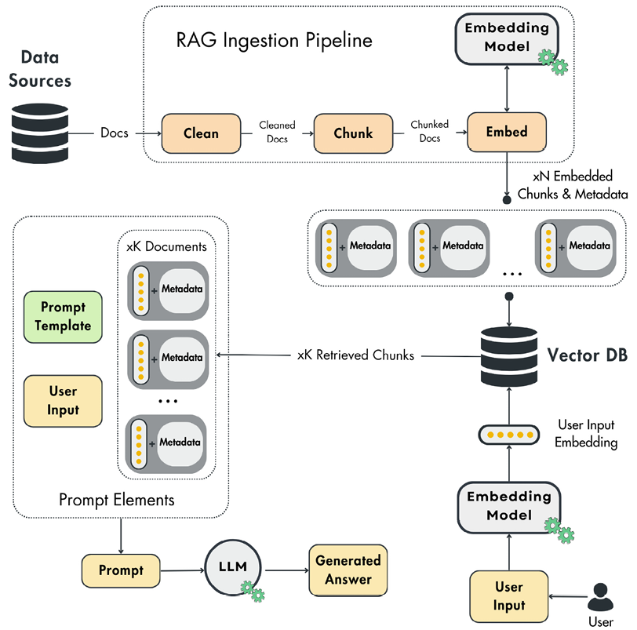
當你需要存取任何類型的外部資訊時，就必須在生成式 AI 應用中實作 RAG。例如，在實作理財助理時，你很可能需要取得最新新聞、報告與價格，才能提供有價值的答案。或者，如果你在打造旅遊推薦器，就必須檢索並解析一份可能的景點、餐廳與活動清單。在訓練時，LLM 無法取得你的特定資料，因此你經常得在生成式 AI 專案中實作 RAG 策略。現在，讓我們深入探討擷取、檢索與生成管線。
English original
擷取管線
RAG 擷取管線會從各種資料來源（例如資料倉儲、資料湖、網頁等）擷取原始文件。接著，它會清理、切塊（chunking，切成較小的區段），並對文件進行嵌入。最終，它會把嵌入後的區塊載入 vector DB（或其他類似的向量儲存）。
English original
因此，RAG 擷取管線可拆分為以下部分：
English original
- 資料擷取模組會從資料庫、API 或網頁等各種來源蒐集所有必要資料。此模組高度取決於你的資料。它可以簡單到只是查詢你的資料倉儲，也可以複雜到如爬取 Wikipedia。
- 清理層會將所擷取的資料標準化，並移除不想要的字元。例如，你必須從輸入文字中移除所有無效字元，例如非 ASCII 字元以及粗體與斜體字元。另一個常見的清理策略是把 URL 替換為佔位符。不過，你的清理策略會依資料來源與 embedding 模型而有所不同。
- 切塊模組會把清理後的文件切成更小的片段。由於我們想把文件內容送進 embedding 模型，這是確保內容不超過模型輸入上限的必要做法。此外，切塊也是區隔特定語意相關區域所必需。例如，在對一本書的章節進行切塊時，最理想的方式是把相似的段落歸入同一個區段或區塊。如此一來，在檢索時，你只會把必要的資料加入提示。
- 嵌入元件會使用 embedding 模型，取得區塊內容（文字、影像、音訊等）並將其投影到一個富含語意價值的稠密向量——關於嵌入的更多內容，請見下方「什麼是嵌入？」一節。
- 載入模組會取得嵌入後的區塊以及一份 metadata 文件。metadata 會包含必要資訊，例如嵌入內容、該區塊來源的 URL，以及該內容在網路上發布的時間。嵌入會被當作索引，用來查詢相似的區塊；而 metadata 則用來存取加入提示以進行增強的資訊。
至此，我們已有一個 RAG 擷取管線，它能接收原始文件作為輸入、處理它們，並填充 vector DB。下一步，是正確地從向量儲存中檢索相關資料。
English original
檢索管線
檢索元件會取得使用者的輸入（文字、影像、音訊等），對其進行嵌入，並查詢 vector DB 以找出與使用者輸入相似的向量。檢索步驟的主要功能，是把使用者的輸入投影到與 vector DB 中作為索引的嵌入相同的向量空間。這讓我們能透過比較向量儲存中的嵌入與使用者輸入向量，找出前 K 個最相似的條目。這些條目隨後會作為內容，用來增強送入 LLM 以生成答案的提示。
English original
你必須使用距離度量來比較兩個向量，例如歐幾里得距離或曼哈頓距離。但最受歡迎的是餘弦距離（cosine distance），它等於 1 減去兩個向量夾角的餘弦值，如下所示：
English original
它的範圍從 -1 到 1，當向量 A 與 B 方向相反時值為 -1，若兩者正交則為 0，若兩者指向相同方向則為 1。
English original
大多數情況下，餘弦距離在非線性的複雜向量空間中表現良好。然而，必須注意的是，選擇適當的向量距離取決於你的資料以及你所使用的 embedding 模型。
English original
有一個關鍵因素必須強調：使用者的輸入與嵌入必須處於同一個向量空間。否則，你無法計算兩者之間的距離。為此，必須以你在 RAG 擷取管線中處理原始文件的相同方式，來前處理使用者的輸入。這意味著你必須使用相同的函式、模型與超參數，來清理、切塊（若有必要）並嵌入使用者的輸入。這類似於你必須在訓練與推論之間以相同方式把資料前處理成特徵；否則推論會產生不準確的結果——這種現象也稱為訓練－服務偏差（training-serving skew）。
English original
生成管線
RAG 系統的最後一步，是取得使用者的輸入、檢索資料、將其送交 LLM，並生成有價值的答案。
English original
最終提示來自一個系統模板與提示模板，並以使用者的查詢與所檢索到的上下文填入。依你的應用而定，你可能只有單一提示模板，也可能有多個提示模板。通常，所有提示工程都在提示模板的層級完成。
English original
下方是一個 dummy 範例，展示一般性的系統模板與提示模板長什麼樣子，以及它們如何與檢索邏輯和 LLM 一起用來生成最終答案：
English original
system_template = """
You are a helpful assistant who answers all the user's question
"""
prompt_template = """
Answer the user's question using only the provided context. If
Context: {context}
User question: {user_question}
"""
user_question = "<your_question>"
retrieved_context = retrieve(user_question)
prompt = f"{system_template}\n"
prompt += prompt_template.format(context=retrieved_context, user_question=user_question)
answer = llm(prompt)隨著提示模板演進，每次變更都應依機器學習維運（MLOps）最佳實務進行追蹤與版本控制。如此一來，在訓練或推論時，你永遠知道某個答案是由特定版本的 LLM 與提示模板所生成。你可以透過 Git 來做到這點、把提示模板存放在資料庫中，或使用 LangFuse 等專門的提示管理工具。
English original
如同我們在檢索管線中所見，有些關鍵面向會直接影響 RAG 系統的準確性：外部資料的嵌入（通常儲存於 vector DB）、使用者查詢的嵌入，以及我們如何用餘弦距離等函式找出兩者的相似度。為了更理解 RAG 演算法的這一部分，讓我們放大檢視什麼是嵌入，以及它們如何被計算。
English original
什麼是嵌入？
想像你正試著教電腦理解這個世界。嵌入就像一種特殊的翻譯器，把這些事物轉換成數值代碼。不過，這組代碼並非隨機，因為相似的詞或項目最終會得到彼此接近的代碼。這就像一張地圖，意思相近的詞會被聚集在一起。
English original
基於這樣的理解，更理論性的定義是：嵌入是把物件（例如詞、影像，或推薦系統中的項目）編碼為連續向量空間中向量的稠密數值表示。這種轉換有助於捕捉物件之間的語意與關係。例如，在自然語言處理（NLP）中，嵌入會把詞轉換成向量，其中語意相近的詞在向量空間中會被放置在彼此接近的位置。
English original
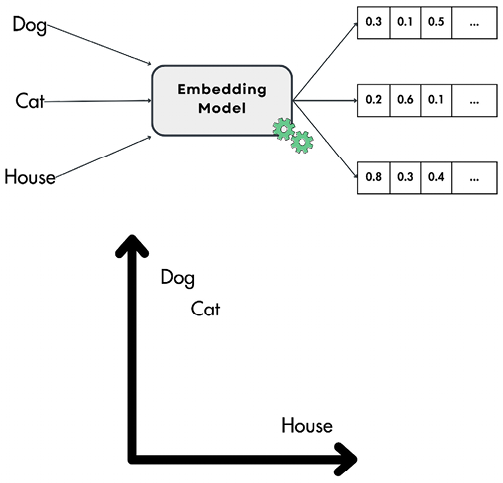
一個常見的做法是把嵌入（embedding）視覺化，以便理解並評估它們之間的幾何關係。由於嵌入的維度通常超過 2 或 3 維，一般介於 64 到 2048 維之間，因此你必須再次將它們投影到 2D 或 3D。
English original
例如，你可以使用 UMAP（https://umap-learn.readthedocs.io/en/latest/index.html），這是一種廣為人知的降維方法，在將嵌入投影到 2D 或 3D 時以保留各點之間的幾何特性著稱。另一個在視覺化向量時常用的降維演算法是 t-SNE（https://scikit-learn.org/stable/modules/generated/sklearn.manifold.TSNE.html）。然而，與 UMAP 相比，它更具隨機性，並且不會保留各點之間的拓撲關係。
English original
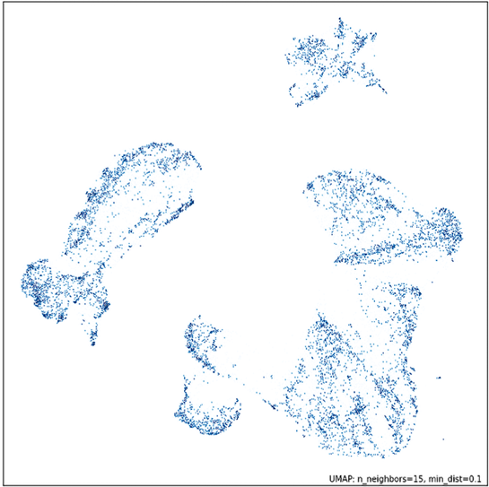
為什麼嵌入如此強大
首先，ML 模型只能處理數值。處理表格資料時這並不是問題，因為資料通常以數值形式存在，或很容易被處理成數字。當我們想把文字、圖像或音訊資料餵給模型時，嵌入就派得上用場。
English original
舉例來說，使用 transformer 模型時，你會對所有文字輸入進行 tokenization，其中每個 token 都有一個與之關聯的嵌入。這個流程美妙之處在於它的單純：transformer 的輸入是一連串嵌入，神經網路的 dense layers 可以輕易且自信地詮釋它。
English original
根據這個例子，你可以用嵌入編碼任何類別變數並餵給 ML 模型。但為什麼不使用其他簡單方法，例如 one-hot encoding？在處理高基數（high cardinality）的類別變數（例如語言詞彙表）時，若使用其他古典方法，你會遭遇維度詛咒。例如，若你的詞彙表有 10,000 個 token，那麼套用 one-hot encoding 之後，單一 token 的長度就會是 10,000。若輸入序列有 N 個 token，就會變成 N * 10,000 個輸入參數。若 N >= 100（輸入文字時經常如此），輸入就會大到無法使用。其他不會遭遇維度詛咒的古典方法（例如 hashing）還有另一個問題：你會失去向量之間的語意關係。
English original
嵌入協助我們編碼類別變數，同時控制輸出向量的維度。它們也運用巧妙的方式，把資訊壓縮到比樸素雜湊技巧更低維的空間。
English original
其次，將輸入轉為嵌入可縮小其維度規模，並把所有語意壓縮進一個稠密向量。這在處理圖像時是極為普遍的做法：由 CNN encoder 模組將高維語意映射成嵌入，之後再由 CNN decoder 處理，執行分類或迴歸步驟。
English original
下圖展示典型的 CNN 結構。想像每一層裡有許多小方格，那些就是「感受野（receptive fields）」。每個方格會將資訊饋入上一層的單一神經元。當你在網路中前進時，會發生兩件關鍵的事：
English original
- 縮小圖像：特殊的「subsampling」運算會讓層變小，聚焦於關鍵細節。
- 學習特徵：「convolution」運算則會在網路從圖像中學到更複雜特徵時，實際上增大層的規模。
最後，末端的一個 fully connected layer 會接收所有處理過的資訊，並將其轉換為最終的向量嵌入，也就是圖像的數值表示。
English original
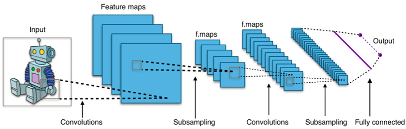
嵌入是如何被建立的？
嵌入是由深度學習模型建立的，這些模型能理解你輸入的脈絡與語意，並將其投影到一個連續的向量空間。
English original
可用來建立嵌入的深度學習模型種類繁多，依資料輸入類型而異。因此，在挑選嵌入模型之前，先理解你的資料以及你需要從中得到什麼，是至關重要的。
English original
例如，處理文字資料時，早期用來為詞彙建立嵌入的方法之一是 Word2Vec 與 GloVe。這些方法至今仍常用於較簡單的應用。
English original
另一個常見做法是使用 encoder-only transformers，例如 BERT，或其家族中的其他方法，例如 RoBERTa。這些模型利用 transformer 架構的 encoder，巧妙地將你的輸入投影到稠密向量空間，之後可作為嵌入使用。
English original
若想在 Python 中快速計算嵌入，你可以方便地使用 Sentence Transformers 這個 Python 套件（Hugging Face 的 transformer 套件也提供）。此工具提供使用者友善的介面，讓嵌入流程變得直接且有效率。
English original
在下面的程式碼片段中，你可以看到我們如何從 SentenceTransformer 載入模型、為三句話計算嵌入，最後計算它們之間的 cosine similarity。一句話與自身的相似度永遠是 1。此外，第一句與第二句的相似度約為 0，因為這兩句話沒有任何共通點。相對地，第一句與第三句之間的數值較高，因為它們有部分重疊的脈絡：
English original
from sentence_transformers import SentenceTransformer
model = SentenceTransformer("all-MiniLM-L6-v2")
sentences = [
"The dog sits outside waiting for a treat.",
"I am going swimming.",
"The dog is swimming."
]
embeddings = model.encode(sentences)
print(embeddings.shape)
# 輸出：[3, 384]
similarities = model.similarity(embeddings, embeddings)
print(similarities)
# 輸出：
# tensor([[ 1.0000, -0.0389, 0.2692],
# [-0.0389, 1.0000, 0.3837],
# [ 0.2692, 0.3837, 1.0000]])
#
# similarities[0, 0] = 第一句與自身的相似度
# similarities[0, 1] = 第一句與第二句的相似度
# similarities[2, 1] = 第三句與第二句的相似度上述片段的原始碼可在 https://github.com/PacktPublishing/LLM-Engineering/blob/main/code_snippets/08_text_embeddings.py 找到。
English original
效能最佳的嵌入模型會隨時間與你的具體使用情境而改變。你可以在 Hugging Face 上的 Massive Text Embedding Benchmark（MTEB）找到特定模型。依你的需求，你可以考慮效能最佳的模型、準確度最高的模型，或記憶體佔用最小的模型。這項決定完全取決於你的需求（例如準確度與硬體）。不過，Hugging Face 與 SentenceTransformer 讓切換不同模型變得簡單，因此你總是可以實驗各種選項。
English original
處理圖像時，你可以使用卷積神經網路（CNNs）來建立嵌入。常見的 CNN 網路以 ResNet 架構為基礎。然而，我們無法直接將圖像嵌入技術用於音訊錄音。取而代之的是，我們可以為音訊建立視覺化表示，例如頻譜圖（spectrogram），然後對這些視覺表示套用圖像嵌入模型。這讓我們能以電腦可理解的方式，捕捉圖像與聲音的本質。
English original
藉由運用 CLIP 這類模型，你實際上可以將一段文字與一張圖像嵌入到同一個向量空間。這讓你得以用一句話作為輸入來尋找相似的圖像，或反過來操作，展現 CLIP 的實用性。
English original
在下面的程式碼片段中，我們使用 CLIP 編碼一張瘋狂貓咪的圖像與三句話。最後，我們用 cosine similarity 計算圖片與這些句子之間的相似程度：
English original
from io import BytesIO
import requests
from PIL import Image
from sentence_transformers import SentenceTransformer
response = requests.get(
"https://github.com/PacktPublishing/LLM-Engineering/blob/main/images/crazy_cat.jpg"
)
image = Image.open(BytesIO(response.content))
model = SentenceTransformer("clip-ViT-B-32")
img_emb = model.encode(image)
text_emb = model.encode(
["A crazy cat smiling.",
"A white and brown cat with a yellow bandana.",
"A man eating in the garden."]
)
print(text_emb.shape) # noqa
# 輸出：(3, 512)
similarity_scores = model.similarity(img_emb, text_emb)
print(similarity_scores) # noqa
# 輸出：tensor([[0.3068, 0.3300, 0.1719]])原始碼可在 https://github.com/PacktPublishing/LLM-Engineering/blob/main/code_snippets/08_text_image_embeddings.py 找到。
English original
在此，我們對嵌入的計算方式做了簡短的介紹。具體實作的領域非常廣大，但重要的是要知道：嵌入幾乎可以為大多數數位資料類別計算，例如詞彙、句子、文件、圖像、影片與圖譜。
English original
必須理解的是：當你需要計算兩個不同資料類別之間的距離時（例如一句話的向量與一張圖像之間的距離），你必須使用專門的模型。這類模型被設計成能將兩種資料類型投影到同一個向量空間（例如 CLIP），以確保距離計算的準確性。
English original
嵌入的應用
由於生成式 AI 的革新（其運用 RAG），嵌入在資訊檢索任務中變得極為熱門，例如文字、程式碼、圖像與音訊的語意搜尋，以及代理（agent）的長期記憶。但在生成式 AI 之前，嵌入早已被大量用於：
English original
- 表示餵給 ML 模型的類別變數（例如詞彙 tokens）
- 推薦系統：透過編碼使用者與項目，找出它們之間的關係
- 分群與異常值偵測
- 使用 UMAP 等演算法進行資料視覺化
- 將嵌入當作特徵來進行分類
- 零樣本分類（zero-shot classification）：比較各類別的嵌入，並挑選最相似的那一個
要充分理解 RAG 如何運作，最後一步是檢視 vector DBs，以及它們如何利用嵌入來檢索資料。
English original
更多關於 vector DBs
Vector DBs 是專門設計來有效率地儲存、索引與檢索向量嵌入的資料庫。傳統以純量（scalar）為基礎的 DBs 難以應付向量資料的複雜度，這使得 vector DBs 在即時語意搜尋等任務上至關重要。
English original
雖然像 FAISS 這類獨立的向量索引在相似度搜尋上很有效，但它們缺乏 vector DBs 全面的資料管理能力。Vector DBs 支援 CRUD 操作、metadata 過濾、可擴展性、即時更新、備份、生態系整合與強大的資料安全，使其比獨立索引更適合生產環境。
English original
vector DB 如何運作？
想想你平常如何搜尋一個 DB。你輸入某個具體的東西，系統就吐出完全相符的結果。傳統 DBs 就是這樣運作。Vector DBs 則不同：我們尋找的不是完美匹配，而是查詢向量最接近的鄰居。在底層，vector DB 使用近似最近鄰（approximate nearest neighbor，ANN）演算法來找出這些鄰近的向量。
English original
雖然 ANN 演算法不會回傳給定搜尋的最佳匹配，但標準的最近鄰演算法在實務上太慢而無法運作。此外，經驗顯示，對給定輸入查詢僅使用最佳匹配的近似值，效果已足夠好。因此，在準確度與延遲之間的取捨，最終傾向於 ANN 演算法。
English original
以下是 vector DB 的典型工作流程：
English original
- 索引向量：向量會使用針對高維資料最佳化的資料結構來建立索引。常見的索引技術包括階層式可導覽小世界（hierarchical navigable small world，HNSW）、隨機投影（random projection）、乘積量化（product quantization，PQ）以及局部敏感雜湊（locality-sensitive hashing，LSH）。
- 相似度查詢：在搜尋期間，資料庫會查詢已建立索引的向量，找出與輸入向量最相似的向量。此過程會依據餘弦相似度、歐幾里得距離或內積等相似度度量來比較向量。每種度量都有其獨特優勢，適合不同的使用情境。
- 後處理結果：在找出潛在的符合項目後，結果會經過後處理以提升準確度。此步驟確保最相關的向量被回傳給使用者。
向量資料庫可以在向量搜尋之前或之後，依據 metadata 過濾結果。這兩種做法在效能與準確度上各有取捨。查詢本身也取決於 metadata（連同向量索引），因此其中也包含用於過濾操作的 metadata 索引。
English original
建立向量索引的演算法
向量資料庫使用各種演算法來建立向量索引，並有效率地管理資料搜尋：
English original
- 隨機投影：隨機投影透過使用隨機矩陣將向量投影到較低維度的空間，以降低向量的維度。此技術會保留向量之間的相對距離，有助於更快速的搜尋。
- PQ：PQ 透過將向量切分為較小的子向量，再將這些子向量量化為代表性代碼來壓縮向量。這能降低記憶體用量並加速相似度搜尋。
- LSH：LSH 會將相似的向量映射到同一個桶（bucket）。此方法透過只聚焦於資料的子集，實現快速的近似最近鄰搜尋，並降低計算複雜度。
- HNSW：HNSW 會建構多層圖形，其中每個節點代表一組向量。相似的節點會相互連接，讓演算法能在圖中導覽，並有效率地找出最近鄰。
這些演算法讓向量資料庫能有效率地處理複雜且大規模的資料，使其非常適合各種 AI 與 ML 應用。
English original
資料庫操作
向量資料庫也具備與標準資料庫相同的共通特性，以確保在生產環境中具備高效能、容錯能力與易於管理。關鍵操作包括：
English original
- 分片與複寫：資料會分割（分片）到多個節點，以確保可擴充性與高可用性。跨節點複寫資料有助於在節點故障時維持資料完整性與可用性。
- 監控：持續監控資料庫效能，包括查詢延遲與資源用量（RAM、CPU、磁碟），有助於維持最佳運作，並在潛在問題影響系統之前先發現它們。
- 存取控制：實作強健的存取控制機制，確保只有經過授權的使用者能存取與修改資料。這包括角色型存取控制（role-based access control）以及其他安全協定，用以保護敏感資訊。
- 備份：定期備份資料庫對災難復原至關重要。自動化備份流程可確保在資料損毀或遺失時，能將資料還原至先前的狀態。
進階 RAG 概觀
我們剛才介紹的 vanilla RAG 框架並未處理許多會影響檢索與答案生成品質的基本面向，例如：
English original
- 檢索到的文件與使用者的問題相關嗎？
- 檢索到的上下文足以回答使用者的問題嗎？
- 是否有任何冗餘資訊，只會為擴增提示（augmented prompt）增添雜訊？
- 檢索步驟的延遲符合我們的需求嗎？
- 如果無法利用檢索到的資訊生成有效答案，我們該怎麼辦？
從上述問題可以得出兩個結論。第一個結論是，我們需要為 RAG 系統建立強健的評估模組，能夠量化並衡量檢索資料的品質，以及相對於使用者問題所生成答案的品質。我們會在第九章更詳細討論這個主題。第二個結論是，我們必須改進 RAG 框架，直接在演算法中處理檢索的限制。這些改進稱為進階 RAG（advanced RAG）。
English original
vanilla RAG 設計可以在三個不同階段進行最佳化：
English original
- 檢索前（pre-retrieval）：此階段著重於如何為資料索引最佳化來結構化與前處理你的資料，以及查詢最佳化。
- 檢索（retrieval）：此階段圍繞在改進 embedding 模型與 metadata 過濾，以改善向量搜尋步驟。
- 檢索後（post-retrieval）：此階段主要針對從檢索到的文件中過濾雜訊的不同方法，以及在將提示餵給 LLM 進行答案生成之前壓縮提示。
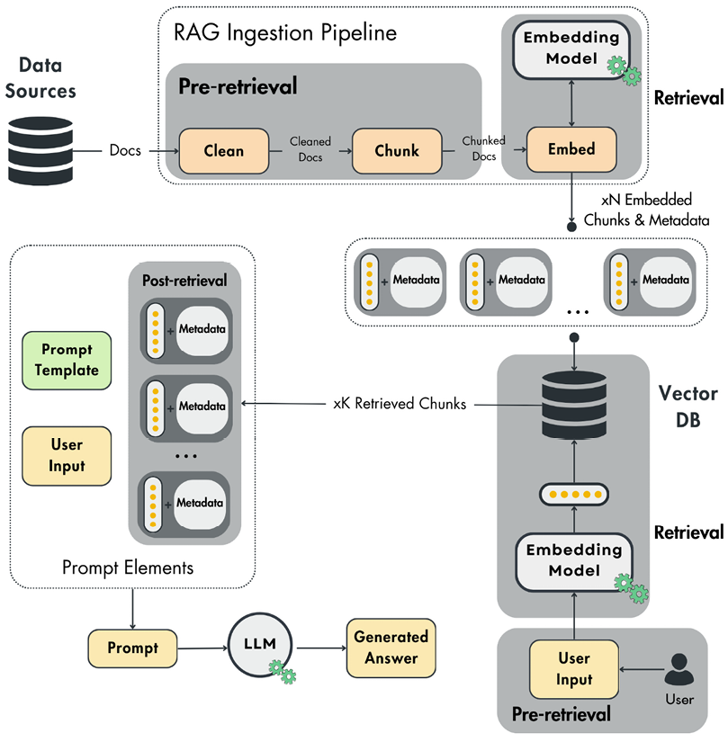
本節並非旨在窮盡列出所有可用的進階 RAG 方法。目標是建立「什麼可以被最佳化」的直覺。我們只會使用以文字資料為基礎的例子，但無論資料類別為何，進階 RAG 的原則都相同。現在，讓我們逐一深入這三個組成部分。
English original
檢索前
檢索前步驟會以兩種不同方式執行：
English original
- 資料索引：屬於 RAG 擷取管線的一部分。主要在清理或分塊模組中實作，以對資料進行前處理，達到更好的索引效果。
- 查詢最佳化：此演算法直接作用於使用者的查詢，在將其嵌入並從向量資料庫檢索區塊之前執行。
由於我們使用能以語意代表分塊文件內容的 embedding 來為資料建立索引，大多數資料索引技術都著重於更好的前處理與資料結構化，以提升檢索效率，例如：
English original
- 滑動視窗（sliding window）：滑動視窗技術會在文字區塊之間引入重疊，確保區塊邊界附近的重要上下文得以保留，從而提升檢索準確度。這在法律文件、科學論文、客戶支援紀錄與醫療紀錄等領域特別有幫助，因為關鍵資訊經常橫跨多個章節。embedding 會連同重疊部分一起在該區塊上計算。因此，滑動視窗透過在邊界之間維持上下文，改善系統檢索相關且連貫資訊的能力。
- 提升資料粒度：這涉及資料清理技術，例如移除不相關的細節、驗證事實正確性，以及更新過時的資訊。乾淨且準確的資料集能帶來更精準的檢索。
- Metadata：加入日期、URL、外部 ID 或章節標記等 metadata 標籤，有助於在檢索期間有效率地過濾結果。
- 最佳化索引結構：這基於不同的資料索引方法，例如各種區塊大小與多重索引策略。
- Small-to-big：此演算法將用於檢索的區塊與用於最終答案生成提示中的上下文解耦。演算法使用一小段文字序列來計算 embedding，同時在 metadata 中保留該序列本身及其周圍更寬的視窗。因此，使用較小的區塊可提升檢索準確度，而較大的上下文則為 LLM 增添更多脈絡資訊。
這背後的直覺是：如果我們用整段文字來計算 embedding，可能會引入過多雜訊，或者文字可能包含多個主題，導致 embedding 的整體語意表徵不佳。
English original
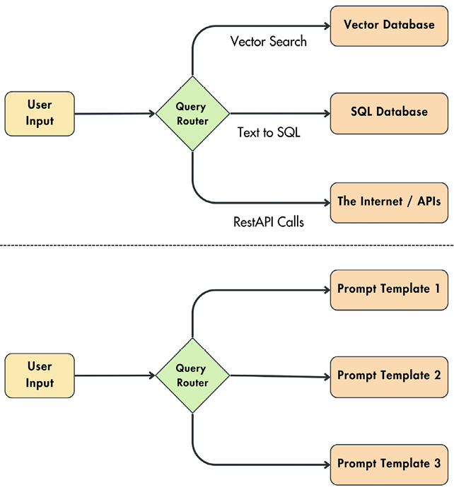
在查詢最佳化方面，我們可以利用查詢路由、查詢改寫與查詢擴展等技術，進一步為 LLM 精煉檢索到的資訊：
English original
- 查詢路由：依據使用者的輸入，我們可能需要與不同類別的資料互動，並以不同方式查詢各類別。查詢路由用於決定依據使用者輸入該採取什麼動作，類似於 if/else 述句。不過，這些決策完全是以自然語言而非邏輯述句來做出。
如圖 4.6 所示，假設依據使用者的輸入，為了執行 RAG，我們可以使用向量搜尋查詢從向量資料庫檢索額外上下文、透過將使用者查詢轉譯為 SQL 指令而從標準 SQL 資料庫檢索，或利用 REST API 呼叫從網際網路檢索。查詢路由器也能偵測是否需要上下文，幫助我們避免對外部資料儲存進行多餘的呼叫。此外，查詢路由器可用於為給定輸入挑選最佳的提示範本。例如，在 LLM Twin 的使用情境中，取決於使用者想要文章段落、貼文或程式碼片段，你需要不同的提示範本來最佳化創作流程。路由通常會使用 LLM 來決定該走哪條路徑，或使用 embedding 挑選向量最相似的路徑。總結來說，查詢路由等同於 if/else 述句，但因為它直接以自然語言運作，所以更具彈性。
English original
As illustrated in Figure 4.6, let’s assume that, based on the user’s input, to do RAG, we can retrieve additional context from a vector DB using vector search queries, a standard SQL DB by translating the user query to an SQL command, or the internet by leveraging REST API calls. The query router can also detect whether a context is required, helping us avoid making redundant calls to external data storage. Also, a query router can be used to pick the best prompt template for a given input. For example, in the LLM Twin use case, depending on whether the user wants an article paragraph, a post, or a code snippet, you need different prompt templates to optimize the creation process. The routing usually uses an LLM to decide what route to take or embeddings by picking the path with the most similar vectors. To summarize, query routing is identical to an if/else statement but much more versatile as it works directly with natural language. - 查詢改寫：有時使用者的初始查詢可能無法完全對應你的資料結構方式。查詢改寫會透過重新表述問題，使其更好地符合已索引資訊來處理這一點。這可能涉及以下技術：
- 換句話說（paraphrasing）：在保留意義的前提下重新表述使用者的查詢（例如「氣候變遷的原因是什麼？」可以改寫為「促成全球暖化的因素」）。
- 同義詞替換：以同義詞取代較不常見的字詞，以擴大搜尋範圍（例如「joyful」可改寫為「happy」）。
- 子查詢：對於較長的查詢，我們可以將其拆解為多個較短且更聚焦的子查詢。這有助於檢索階段更精確地辨識相關文件。
- 假設性文件嵌入（hypothetical document embeddings，HyDE）：此技術會讓 LLM 針對查詢建立一個假設性回應。接著，原始查詢與 LLM 的回應都會被餵入檢索階段。
- 查詢擴展：此做法旨在透過加入額外的詞彙或概念來豐富使用者的問題，產生同一初始問題的不同觀點。例如，在搜尋「disease」時，你可以利用與原始查詢詞相關的同義詞與相關詞彙，並一併納入「illnesses」或「ailments」。
- 自我查詢（self-query）：核心概念是將非結構化查詢映射為結構化查詢。LLM 會辨識輸入文字中的關鍵實體、事件與關係。這些識別結果會作為過濾參數，以縮小向量搜尋空間（例如辨識查詢中的城市，例如「Paris」，並將其加入你的過濾條件以縮小向量搜尋空間）。
資料索引與查詢最佳化這兩類檢索前最佳化技術，都高度取決於你的資料類型、結構與來源。因此，如同任何資料處理管線，沒有任何方法永遠有效，因為每個使用情境都有其特殊性與陷阱。最佳化你的檢索前 RAG 層是實驗性的工作。因此，真正重要的是嘗試多種方法（例如本節所列舉的方法）、反覆迭代，並觀察哪一種效果最好。
English original
檢索
檢索步驟可以用兩種根本方式來最佳化：
English original
- 改進 RAG 擷取管線中所使用的 embedding 模型，以編碼分塊文件，並在推論時轉換使用者的輸入。
- 利用資料庫的過濾與搜尋功能。此步驟僅會在推論時使用，也就是你必須依據使用者輸入檢索最相似區塊的時候。
這兩種策略都與我們的最終目標一致：透過利用查詢與已索引資料之間的語意相似度，來強化向量搜尋步驟。
English original
在改進 embedding 模型時，你通常必須微調預訓練的 embedding 模型，使其針對你所在領域的特定術語與細微差異進行調整，尤其是在術語不斷演變或存在罕見詞彙的領域。
English original
除了微調 embedding 模型之外，你也可以利用 instructor 模型（https://huggingface.co/hkunlp/instructor-xl），以針對你所在領域的指令／提示來引導 embedding 生成流程。使用這類模型讓你的 embedding 網路貼合你的資料，可以是個不錯的選項，因為微調模型會消耗更多運算與人力資源。
English original
在下列程式碼片段中，你可以看到一個 Instructor 模型的範例，該模型會為關於 AI 的文章標題建立 embedding：
English original
from InstructorEmbedding import INSTRUCTOR
model = INSTRUCTOR("hkunlp/instructor-base")
sentence = "RAG Fundamentals First"
instruction = "Represent the title of an article about AI:"
embeddings = model.encode([[instruction, sentence]])
print(embeddings.shape) # noqa
# 輸出：(1, 768)
原始程式碼可在以下位置找到：https://github.com/PacktPublishing/LLM-Engineering/blob/main/code_snippets/08_instructor_embeddings.py。
English original
在光譜的另一端，以下說明如何利用資料庫經典的過濾與搜尋功能來改進你的檢索：
English original
- 混合搜尋（Hybrid search）：這是向量與關鍵字搜尋的混合。以關鍵字為基礎的搜尋擅長辨識包含特定關鍵字的文件。當你的任務要求精準命中，且檢索到的資訊必須包含完全相符的關鍵字時，混合搜尋就能發揮所長。向量搜尋雖然強大，但有時難以找到完全相符的結果，不過它在尋找更一般的語意相似性方面表現優異。你可以結合這兩種方法，同時利用關鍵字比對與語意相似性。你會有一個通常稱為 alpha 的參數，用來控制兩種方法之間的權重。此演算法包含兩個獨立的搜尋，之後會對其進行正規化並統整。
- 過濾式向量搜尋（Filtered vector search）：這類搜尋利用 metadata 索引，在 metadata 中過濾特定關鍵字。它與混合搜尋不同之處在於，你僅使用向量索引檢索資料一次，並在向量搜尋之前或之後執行過濾步驟，以縮小你的搜尋空間。
在實務上，在檢索端，你通常會從過濾式向量搜尋或混合搜尋開始，因為它們實作起來相當快速。這種做法讓你保有依據效能調整策略的彈性。如果結果不如預期，你隨時可以微調你的 embedding 模型。
English original
檢索後
檢索後的各種最佳化僅針對已檢索的資料執行，以確保 LLM 的效能不會因為有限的上下文視窗或雜訊資料等問題而受損。這是因為檢索到的上下文有時可能過大，或包含無關資訊，這兩者都會讓 LLM 分心。
English original
在檢索後階段有兩種常見的方法：
English original
- 提示壓縮（Prompt compression）：刪除不必要的細節，同時保留資料的精髓。
- 重新排序（Re-ranking）：使用 cross-encoder ML 模型，為使用者輸入與每個檢索到的區塊之間給出匹配分數。檢索到的項目會依此分數排序。只有前 N 名結果會被保留為最相關的內容。如圖 4.7 所示，這種做法之所以有效，是因為重新排序模型能比單純的相似度搜尋在使用者輸入與某些內容之間找到更複雜的關係。然而，我們無法在初始檢索步驟套用此模型，因為它成本高昂。這就是為什麼一種常見策略是先使用 embedding 之間的相似度距離來檢索資料，再使用重新排序模型精煉檢索到的資訊，如圖 4.8 所示。
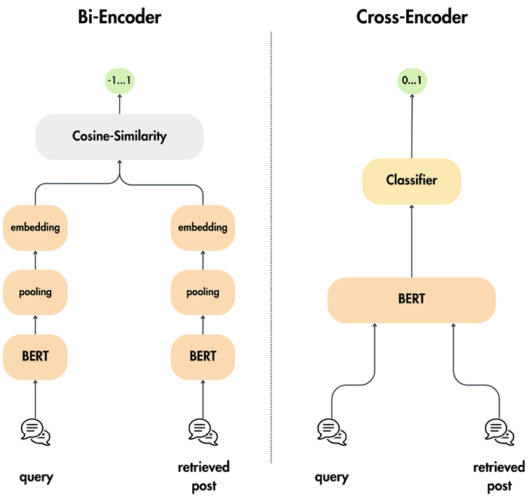
上述技術遠非所有可能解決方案的完整清單。我們將它們作為範例，讓你對 RAG 工作流程中每個步驟可以做（也應該做）哪些最佳化建立直覺。事實是，這些技術會因你處理的資料類型而有極大差異。
English original
例如，如果你處理的是文字與圖像等多模態資料，前述大多數技術都無法適用，因為它們是專為文字設計的。
English original
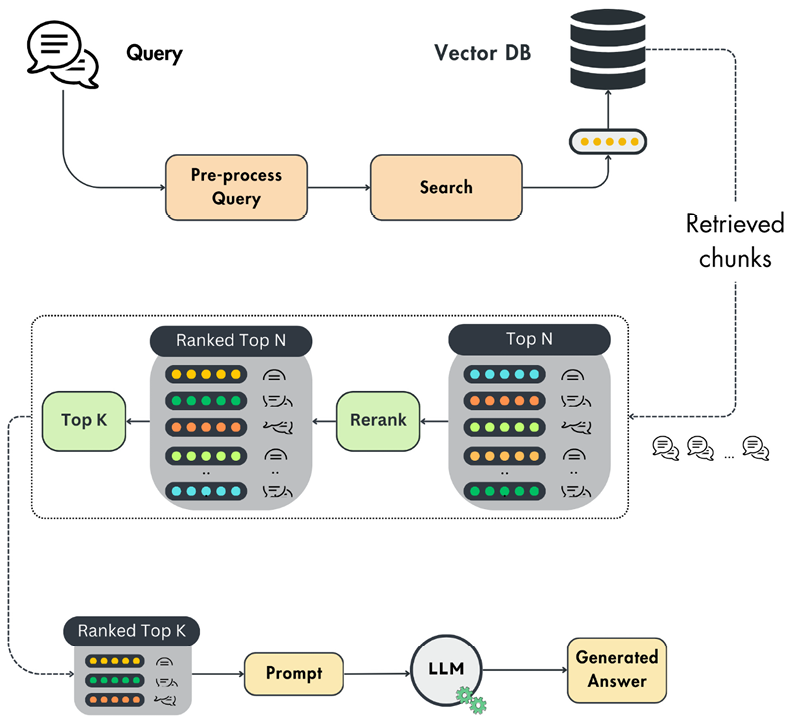
總結來說，這些最佳化的主要目標是在三個關鍵階段強化 RAG 演算法：檢索前、檢索與檢索後。這包括為改進向量索引而預處理資料、調整使用者查詢以獲得更準確的搜尋、強化 embedding 模型、利用資料庫經典的過濾操作，以及移除雜訊資料。將這些目標放在心上，你就能有效最佳化你的 RAG 工作流程的資料處理與檢索。
English original
探索 LLM Twin 的 RAG 特徵管線架構
現在你已對 RAG 及其運作方式建立穩固的直覺與理解，我們將繼續探索我們特定的 LLM Twin 使用情境。目標是提供一個可動手的端到端範例，以鞏固本章所呈現的理論。
English original
任何 RAG 系統都分成兩個獨立元件：
English original
- 擷取管線（ingestion pipeline）：接收原始資料，進行清理、分塊、建立 embedding，並載入向量資料庫。
- 推論管線（inference pipeline）：向向量資料庫查詢相關上下文，並最終透過運用 LLM 生成答案。
本章我們將聚焦於實作 RAG 擷取管線，並在第 9 章繼續開發推論管線。
English original
基於這一點，讓我們快速複習我們要解決的問題，以及我們的原始資料從何而來。請記得我們正在建構一個端到端 ML 系統。因此，所有元件都透過介面（或契約）互相溝通，且每個管線只有單一職責。在我們的案例中，我們擷取原始文件、對其進行預處理，並載入向量資料庫。
English original
我們要解決的問題
如前一章所述，本書旨在展示如何建構一個由端到端 ML 系統支援、可投入生產的 LLM Twin。
English original
在本章中，我們特別想設計一條 RAG 特徵管線，從我們的 MongoDB 資料倉儲取得原始社群媒體資料（例如文章、程式碼儲存庫與貼文）。原始文件的文字將被清理、分塊、建立 embedding，並最終載入特徵存放區。如第 1 章所討論，我們將使用 ZenML artifacts 與 Qdrant 向量資料庫實作一個邏輯特徵存放區。
English original
由於我們想建構全自動的特徵管線，我們希望讓資料倉儲與邏輯特徵存放區保持同步。請記得，在推論時，用於生成答案的上下文是從向量資料庫檢索而來。因此，資料倉儲與特徵存放區之間的同步速度會直接影響我們 RAG 演算法的準確度。
English original
另一個關鍵考量是如何自動化特徵管線，並將其與我們 ML 系統的其餘部分整合。我們的目標是盡量減少兩個資料儲存之間的任何不同步，因為這可能損害我們系統的完整性。
English original
總結來說，我們必須設計一條特徵管線，持續同步資料倉儲與邏輯特徵存放區，並同時相應地處理資料。將資料放在特徵存放區對可投入生產的 ML 系統至關重要。LLM Twin 推論管線會向其查詢以進行 RAG，而訓練管線則會從中取用已追蹤並版本化的微調資料集。
English original
特徵存放區
特徵存放區將是訓練與推論管線中所使用所有特徵的中央存取點。訓練管線會使用特徵存放區中的已清理資料（以 artifacts 形式儲存）來微調 LLM。推論管線會向向量資料庫查詢分塊文件以進行 RAG。這就是為什麼我們設計的是一條特徵管線，而不只是 RAG 擷取管線。在實務上，特徵管線包含多個子元件，其中之一就是 RAG 邏輯。
English original
請記得，特徵管線主要被當作一張心智圖，用來在 ML 系統的複雜度中導航。它清楚說明其以原始資料為輸入，然後輸出特徵與選用的標籤，並儲存在特徵存放區中。因此，一個好的直覺是想像資料倉儲與特徵存放區之間的所有邏輯都歸入特徵管線的命名空間，並由一個或多個子管線組成。例如，我們將實作另一條管線，接收已清理的資料，處理成 instruct 資料集，並儲存到 artifacts；這同樣歸在特徵管線的範疇之下，因為這些 artifacts 屬於邏輯特徵存放區的一部分。另一個例子是在原始資料或已計算的特徵之上實作一條資料驗證管線。
English original
另一個重要的觀察是，若你遵循標準慣例，以字串形式儲存的文字資料並不被視為特徵。特徵是直接餵入模型的東西。例如，我們必須將 instruct 資料集或分塊文件進行 tokenization，才能被視為特徵。為什麼？因為直接餵入模型的是 tokens，而不是以字串表示的句子。遺憾的是，這會讓系統更複雜且缺乏彈性。因此，我們會在執行時進行 tokenization。但這個觀察很重要，因為它清楚說明了你不必對特徵／訓練／推論（FTI）架構過於僵化。你必須採用它並將其調整到自己的使用情境。
English original
原始資料從哪裡來？
快速提醒一下，所有原始文件都儲存在 MongoDB 資料倉儲中。該資料倉儲由第 3 章介紹的資料收集 ETL 管線填充。此 ETL 管線會爬取 Medium 與 Substack 等各種平台，將資料標準化，並載入 MongoDB。關於此主題的更多細節，請參閱第 3 章。
English original
設計 RAG 特徵管線的架構
最後一步是規劃並走過 LLM Twin 應用程式 RAG 特徵管線的設計。我們將採用批次設計，排程從 MongoDB 資料倉儲輪詢資料、進行處理，並載入 Qdrant 向量資料庫。我們首先要問自己的問題是：「為什麼要採用批次管線？」
English original
但在回答這個問題之前，讓我們先快速了解批次架構相對於串流設計是如何運作與表現的。
English original
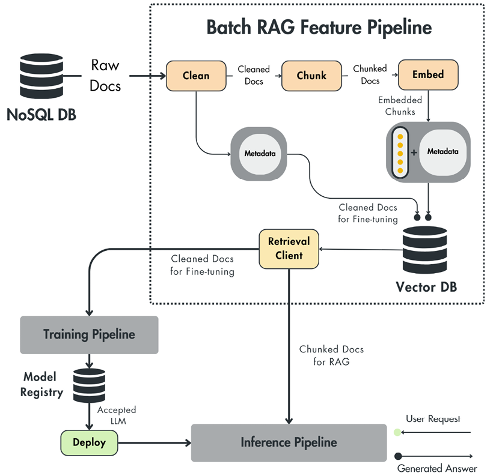
批次管線
資料系統中的批次管線是指一種資料處理方法，資料會以預先定義的間隔、較大的資料量（也稱為「批次」）被收集、處理與儲存。這種做法不同於即時或串流資料處理，後者是資料一到達就持續處理。批次管線的運作流程如下：
English original
- 資料收集：資料會從各種來源收集並儲存，直到累積足夠數量可供處理。這可能包括來自資料庫、日誌、檔案及其他來源的資料。
- 排程處理：資料處理會以固定間隔排程執行，例如每小時或每天。在這段時間內，蒐集到的資料會被批次處理。這可能包含資料清理、轉換、聚合與其他操作。
- 資料載入：處理完成後，資料會被載入目標系統，例如 DB、資料倉儲、資料湖或特徵儲存（feature store）。這些處理過的資料隨後可用於分析、查詢或進一步處理。
批次管線在處理不需要即時處理的大量資料時特別有用。它們提供若干優勢，包括：
English original
- 效率：批次處理能比即時處理更有效率地處理大量資料，允許最佳化的資源配置與平行處理。
- 複雜處理：批次管線可以執行複雜的資料轉換與聚合，而這些作業對即時處理而言可能過於耗費資源。
- 簡單性：批次處理系統的架構通常比即時系統的架構簡單，因此更容易實作與維護。
批次與串流管線
在實作特徵管線時，你有兩種主要的設計選擇：批次與串流。因此，值得先看清兩者的差異，並理解我們為何在 LLM Twin 的使用案例中選擇批次架構，而非串流架構。
English original
你大可以為串流管線寫出整整一章，這也暗示了它相對於批次設計的複雜度。然而，隨著串流架構日益普及，你必須對其運作方式有直覺性的理解，才能為你的應用程式選擇最佳方案。
English original
串流應用程式的核心要素，是一個分散式事件串流平台（例如 Apache Kafka 或 Redpanda）用來儲存來自多個用戶端的事件，以及一個串流引擎（例如 Apache Flink 或 Bytewax）用來處理這些事件。為了簡化你的架構，你可以把事件串流平台換成佇列，例如 RabbitMQ，用來儲存事件直到被處理為止。表 4.1 依據處理排程與複雜度等多項準則，比較批次與串流管線：
English original
| 面向 | 批次管線 | 串流管線 |
|---|---|---|
| 處理排程 | 以固定間隔處理資料（例如每分鐘、每小時、每天）。 | 持續處理資料，延遲極小。 |
| 效率 | 更有效率地處理大量資料，最佳化資源配置與平行處理。 | 處理單一資料點，提供即時的洞察與更新，讓你能對變化快速反應。 |
| 處理複雜度 | 能夠執行複雜的資料轉換與聚合。 | 設計用來以低延遲處理高速資料串流。 |
| 使用案例 | 適用於不要求立即處理資料的情境。常見於資料倉儲、報表、ETL 流程與特徵管線。 | 非常適合需要即時分析、即時特徵、監控與事件驅動架構的應用程式。 |
| 系統複雜度 | 相較於串流管線，系統通常更容易實作與維護。 | 由於需要低延遲處理、容錯與可擴展性，實作與維護更為複雜。相關工具也更為先進且複雜。 |
表 4.1：批次與串流管線的比較
English original
舉例來說，串流管線在 TikTok 這類社群媒體推薦系統中極為強大。使用社群媒體時，使用者行為會頻繁改變。典型情境是：你想在某個時間點放鬆一下，大多只看小狗影片。但 15 分鐘後你膩了，想要更嚴肅的內容，例如教育性內容或新聞。這意味著推薦系統必須毫無延遲地捕捉這些行為變化，才能讓你持續投入。由於興趣之間的轉換是循環且不可預測的，你不能用每 30 分鐘或每小時執行一次的批次管線來產生更多內容。你可以每分鐘執行一次來產生新內容，但同時也會造成不必要的成本，因為大多數預測根本不會被消費。透過實作串流管線，你可以即時更新特定使用者的特徵，這些特徵接著會傳入一串模型，用來預測新的推薦內容。
English original
串流架構也是即時詐欺偵測演算法的骨幹，例如 Stripe 或 PayPal 所使用的方法。在此情境下，關鍵是在潛在詐欺交易發生時就辨識出來，而不是像批次管線那樣等到幾分鐘或幾小時後才處理。同樣的急迫性也適用於高頻交易平台，它們依據持續湧入的市場資料做出股票預測，讓交易員能在毫秒內做出決策。
English original
另一方面，你可以為離線推薦系統使用批次架構。例如，在為電子商務或串流平台實作這類系統時，你不需要系統反應得那麼即時，因為使用者的行為鮮少改變。因此，使用批次管線、依據歷史使用者行為資料定期（例如每晚）更新推薦內容，不僅更容易實作，成本也更低。
English original
批次管線另一個常見的例子，是用於擷取、轉換與載入資料以支援各種使用案例的 ETL 設計。ETL 設計廣泛存在於將資料從一個 DB 搬移到另一個 DB 的資料管線中。一些實務使用案例包括為分析而聚合資料，此時你必須從多個來源擷取資料、進行聚合，然後載入到連接儀表板的資料倉儲。分析的應用領域可以非常廣泛，從電子商務與行銷到金融與研究皆然。
English original
LLM Twin 使用案例中所採用的資料蒐集管線，就是另一個 ETL 管線的例子：它從網際網路擷取資料、將其結構化，並載入資料倉儲以供後續處理。
English original
除了預測或特徵的新鮮度之外，批次管線相較於串流管線的另一項缺點，是你通常會做出多餘的預測。讓我們以 Netflix 這類串流平台的推薦系統為例。每天晚上，你為所有使用者產生預測。很有可能有一大群使用者當天根本不會登入。此外，使用者通常不會瀏覽所有推薦內容，而是只停留在前幾項。因此，只有一部分預測會被使用，其餘的都在浪費運算資源。
English original
這就是為什麼一個常見策略是先從批次架構開始，因為它更快也更容易實作。在產品上線之後，你再逐步轉向串流設計，以降低成本並改善使用者體驗。
English original
總結來說，我們採用批次架構（而非串流架構）來實作 LLM Twin 的特徵管線，原因如下：
English original
- 不需要立即處理資料：即使同步資料倉儲與特徵儲存對準確的 RAG 系統至關重要，幾分鐘的延遲仍可接受。因此，我們可以排程批次管線每分鐘執行一次，持續同步這兩個資料儲存。這項做法之所以可行，是因為資料量很小。整個資料倉儲只會有數千筆記錄，而不是數百萬或數十億筆。因此，我們可以快速迭代這些記錄，並同步這兩個 DB。
- 簡單性：如前所述，實作串流管線的複雜度是兩倍。在真實世界中，你會希望系統盡可能簡單，使其更容易理解、除錯與維護。此外，簡單性通常也意味著更低的基礎設施與開發成本。
在圖 4.10 中，我們比較了依據你的架構（串流或批次）以及你必須處理的資料量（小資料或大資料），你可以使用哪些工具。在我們的使用案例中，我們位於小資料與批次的象限，並選擇了原生 Python 與生成式 AI 工具（例如 LangChain、Sentence Transformers 與 Unstructured）的組合。
English original
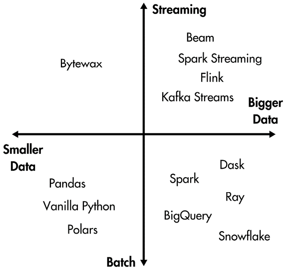
在本章後面的〈變更資料擷取：同步資料倉儲與特徵儲存〉一節中，我們將討論何時從批次架構轉換為串流架構才合理。
English original
核心步驟
大多數 RAG 特徵管線都由五個核心步驟組成。在 LLM Twin 架構中實作的那一條也不例外。因此，你可以很快把這個模式套用到其他 RAG 應用程式，但以下是 LLM Twin 的 RAG 特徵管線的樣貌：
English original
- 資料擷取：從 MongoDB 資料倉儲擷取最新的文章、程式碼儲存庫與貼文。在擷取步驟中，你通常會聚合處理所需的所有資料。
- 清理：來自資料倉儲的資料已經過標準化並部分清理，但我們必須確保文字只包含有用的資訊、沒有重複，且能被嵌入模型解讀。例如，在把文字送進嵌入模型之前，我們必須清理並正規化所有非 ASCII 字元。此外，為了讓資訊在語意上保持密集，我們決定把所有 URL 替換成佔位符，並移除所有 emoji。清理步驟與其說是科學，不如說是藝術。因此，在你有了第一輪具備評估機制的迭代之後，你大概會再反覆調整並改進它。
- 切塊（chunking）：你必須依據每個資料類別與嵌入模型採用不同的切塊策略。例如，在處理程式碼儲存庫時，你會希望區塊範圍較廣；而在處理文章時，你會希望區塊較窄，或限定在段落層級。依你的資料而定，你必須決定要依據章節、節、段落、句子，或僅依固定視窗大小來切分文件。此外，你必須確保區塊大小不超過嵌入模型的最大輸入大小。這就是為什麼你通常會依據你的資料結構與模型的最大輸入大小來對文件切塊。
- 嵌入：你把每個區塊個別送進你所選擇的嵌入模型。從實作角度來看，這一步通常最為簡單，因為 SentenceTransformer 與 Hugging Face 等工具為大多數嵌入模型提供了高階介面。如本章〈什麼是嵌入？〉一節所述，在這個步驟中，最關鍵的決策是決定要用哪個模型，以及是否要對它進行微調。例如，我們使用了 SentenceTransformer 的 “all-mpnet-base-v2” 嵌入模型，它相對極小，且能在大多數機器上執行。不過，我們提供了一個設定檔，讓你可以依閱讀本書時的最新技術水準，快速把嵌入模型配置成更強大的選項。你可以在 Hugging Face 上的 MTEB 排行榜（https://huggingface.co/spaces/mteb/leaderboard）快速找到其他選項。
- 資料載入：最後一步會把切塊文件的嵌入與其元資料（例如作者與文件 ID、內容、URL、平台與建立日期）結合起來。最終，我們把向量與元資料包裝成與 Qdrant 相容的結構，並推送到向量 DB。由於我們想把 Qdrant 當作特徵的唯一真實來源，我們也會把清理後的文件（切塊之前）推送到 Qdrant。我們可以推送沒有向量的資料，因為 Qdrant 的元資料索引行為就像 NoSQL DB。因此，推送未附加向量的元資料，就等同於使用標準的 NoSQL 引擎。
變更資料擷取：同步資料倉儲與特徵儲存
如本章多次強調的，資料不斷在變動，這可能導致 DB、資料湖、資料倉儲與特徵儲存彼此失去同步。變更資料擷取（change data capture，CDC）是一種策略，讓你能以最佳方式維持兩種或多種資料儲存類型之間的同步，而不會產生運算與 I/O 額外負擔。它會捕捉對來源 DB 所做的任何 CRUD 操作，並複製到目標 DB。你也可以選擇在複製過程中加入前處理步驟。
English original
這些同步問題同樣適用於建構特徵管線。一個關鍵的設計選擇，是如何同步資料倉儲與特徵儲存，使資料對你的特定使用案例而言足夠新鮮。
English original
在我們的 LLM Twin 使用案例中，出於簡單性，我們選擇了一個天真的做法。我們實作了一條可定期或手動觸發的批次管線。它會讀取資料倉儲中的所有原始資料，以批次方式處理，並在 Qdrant 向量 DB 中插入新記錄或更新舊記錄。當你處理的記錄數量不多，大約數千到數萬筆時，這運作得很好。但我們這個天真的做法會引出以下問題：
English original
- 如果資料突然成長到數百萬筆記錄（甚至更多），會發生什麼事？
- 如果有一筆記錄從資料倉儲被刪除，會發生什麼事？這會如何反映在特徵儲存中？
- 如果我們只想處理資料倉儲中新增或更新過的項目，而不是全部項目，該怎麼辦？
幸運的是，CDC 模式可以解決所有這些問題。在實作 CDC 時，你可以採取多種做法，但它們全都使用推送或拉取策略：
English original
- 推送（push）：在推送做法中，來源 DB 是主要驅動者。它主動辨識資料變更並傳送到目標系統進行處理。這種方法可確保目標端近乎即時的更新，但若目標系統無法連線，就可能發生資料遺失。為了緩解這點，通常會採用訊息系統作為緩衝。
- 拉取（pull）：拉取方法讓來源 DB 扮演較被動的角色，它只記錄資料變更。目標系統會定期請求這些變更並據此處理更新。雖然這種做法減輕了來源端的負載，但會造成資料傳播的延遲。同樣地，訊息系統在此不可或缺，以避免目標系統不可用期間發生資料遺失。
總結來說，推送方法適合需要立即存取資料的應用程式，而拉取方法更適合大規模資料傳輸、且即時更新並非關鍵的情境。基於這點，偵測資料變更有不同的方法。因此，讓我們列出業界使用的主要 CDC 模式：
English original
- 基於時間戳記：這種做法會在 DB 資料表中新增一個修改時間欄位，通常命名為 LAST_MODIFIED 或 LAST_UPDATED。下游系統可以查詢這個欄位，以辨識自上次檢查以來已被更新的記錄。雖然實作簡單，但這種方法只能追蹤變更、無法追蹤刪除，且因為需要掃描整張資料表而帶來效能額外負擔。
- 基於觸發器：基於觸發器的做法利用 DB 觸發器，在 INSERT、UPDATE 或 DELETE 操作發生時，自動把資料修改記錄到另一張資料表，通常稱為事件資料表。這種方法提供全面的變更追蹤，但由於每個事件都涉及額外的寫入操作，可能影響 DB 效能。
- 基於日誌：DB 會維護交易日誌，記錄所有資料修改（包含時間戳記）。這些日誌主要用於復原，但也可用來把變更即時傳播到目標系統。這種做法把對來源 DB 的效能影響降到最低。其一大優勢是，它避免了在來源 DB 上產生額外的處理額外負擔、能捕捉所有資料變更，且不需要修改 schema。但另一方面，它缺乏標準化的日誌格式，導致各家廠商實作各不相同。
有了這些 CDC 技術，我們可以很快在 RAG 特徵管線中實作一個拉取式、基於時間戳記的策略，以便在資料成長時更最佳地同步資料倉儲與特徵儲存。我們的實作仍然是拉取式，但不會檢查來源 DB 中任何最後更新欄位；它只是從資料倉儲拉取所有內容。
English original
不過，業界最普遍且最佳的做法是基於日誌的方法。它不會對來源 DB 增加任何 I/O 額外負擔、延遲低，且支援所有 CRUD 操作。最大的缺點是其開發複雜度，因為它需要一個佇列來捕捉所有 CRUD 事件，並需要一條串流管線來處理這些事件。
English original
由於這是一本 LLM 書籍，而非資料工程書籍，我們希望保持簡單，但了解這些技術的存在很重要，而且當你目前的實作不再符合應用程式需求時，你隨時可以升級它。
English original
為什麼資料要存成兩份快照？
- 資料清理完成後：用於微調 LLM
- 文件完成切塊與嵌入後：用於 RAG
為什麼我們要這樣設計？請記得，特徵只能從特徵儲存（feature store）存取，用於訓練與推論。因此，這讓我們的設計更具一致性，也更乾淨。
English original
此外，把專門為微調與嵌入使用情境清理過的資料存放在 MongoDB 資料倉儲中，會是一種反模式（antipattern）。資料倉儲中的資料是全公司共用的。因此，針對特定使用情境去處理它並非良好做法。想像另一個摘要（summarization）使用情境，我們必須以不同方式清理與前處理資料。我們就得建立一個新的「Cleaned Data」資料表，並以該使用情境名稱作為前綴。每新增一個使用情境，我們就得重複這件事。
English original
因此，為了避免資料倉儲變成義大利麵式（spaghetti）的混亂結構，資料倉儲中的資料保持通用，只有在下游元件中才會針對特定應用進行建模——在我們的案例中就是特徵儲存。最終，如我們在「核心步驟」一節所述，你可以把向量資料庫（vector DB）的中繼資料索引當成 NoSQL 資料庫來使用。基於這些因素，我們決定把清理後的資料存放在 Qdrant 中，連同文件的切塊與嵌入版本一起保存。
English original
快速提醒一下，當我們把 LLM Twin 系統投入營運時，第 5 章說明的 create instruct dataset 管線會從 Qdrant 讀取清理後的文件、進行處理，並以具版本控管的 ZenML artifact 形式儲存。訓練管線需要的是資料集，而不是原始文件。這也再次提醒我們，我們的邏輯特徵儲存包含用於線上服務的 Qdrant 向量資料庫，以及用於離線訓練的 ZenML artifacts。
English original
編排（Orchestration）
ZenML 將負責編排批次 RAG 特徵管線。使用 ZenML，我們可以把它排程為定期執行，例如每小時一次，或快速以手動方式觸發。另一個選項是在 ETL 資料收集管線完成後觸發它。
English original
透過編排特徵管線並將其整合進 ZenML（或任何其他編排工具），我們就能以持續訓練（continuous training，CT）為最終目標，把特徵管線投入營運。
English original
我們會在第十一章詳細說明編排、排程與 CT 的所有細節。
English original
實作 LLM Twin 的 RAG 特徵管線
最後一步是檢視 LLM Twin 的 RAG 特徵管線程式碼，看看我們如何應用本章討論的所有內容。我們將帶你走過以下項目：
English original
- ZenML 程式碼
- Pydantic 領域物件
- 自訂的物件－向量對應（object-vector mapping，OVM）實作
- 針對所有資料類別的清理、切塊與嵌入邏輯
我們會採取由上而下的方式。因此，讓我們從 Settings 類別與 ZenML 管線開始。
English original
Settings
我們使用 Pydantic Settings（https://docs.pydantic.dev/latest/concepts/pydantic_settings/）定義一個全域 Settings 類別，從 .env 檔案載入敏感或非敏感變數。這種做法也讓我們享有 Pydantic 的所有好處，例如型別驗證。舉例來說，如果我們為 QDRANT_DATABASE_PORT 變數提供字串而非整數，程式就會崩潰。這種行為讓整個應用程式更具決定性且更可靠。
English original
以下是包含建置 RAG 特徵管線所需所有變數的 Settings 類別樣貌：
English original
from pydantic import BaseSettings
class Settings(BaseSettings):
class Config:
env_file = ".env"
env_file_encoding = "utf-8"
… # 其他設定…
# RAG
TEXT_EMBEDDING_MODEL_ID: str = "sentence-transformers/all-MiniLM-L6-v2"
RERANKING_CROSS_ENCODER_MODEL_ID: str = "cross-encoder/ms-marco-MiniLM-L-4-v2"
RAG_MODEL_DEVICE: str = "cpu"
# QdrantDB 向量資料庫
USE_QDRANT_CLOUD: bool = False
QDRANT_DATABASE_HOST: str = "localhost"
QDRANT_DATABASE_PORT: int = 6333
QDRANT_CLOUD_URL: str = "str"
QDRANT_APIKEY: str | None = None
… # 更多設定…
settings = Settings()如內部 Config 類別所述，所有變數都有預設值，或可透過提供 .env 檔案來覆寫。
English original
ZenML 管線與步驟
ZenML 管線是 RAG 特徵工程管線的進入點。它反映了 RAG 資料匯入程式碼的五個核心階段：擷取原始文件、清理、切塊、嵌入，以及載入到邏輯特徵儲存。feature_engineering() 函式內的呼叫都是 ZenML 步驟（step），代表執行 RAG 五個階段的單一執行單元。程式碼可在 GitHub 儲存庫取得：https://github.com/PacktPublishing/LLM-Engineers-Handbook/blob/main/pipelines/feature_engineering.py：
English original
from zenml import pipeline
from llm_engineering.interfaces.orchestrator.steps import feature_engineering as fe_steps
@pipeline
def feature_engineering(author_full_names: list[str]) -> None:
raw_documents = fe_steps.query_data_warehouse(author_full_names)
cleaned_documents = fe_steps.clean_documents(raw_documents)
last_step_1 = fe_steps.load_to_vector_db(cleaned_documents)
embedded_documents = fe_steps.chunk_and_embed(cleaned_documents)
last_step_2 = fe_steps.load_to_vector_db(embedded_documents)
return [last_step_1.invocation_id, last_step_2.invocation_id]圖 4.11 顯示多次特徵工程管線執行在 ZenML 儀表板中的樣貌。
English original
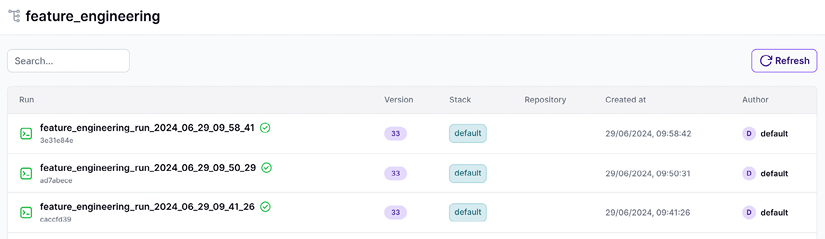
圖 4.12 顯示 RAG 特徵管線的 DAG，你可以追蹤所有管線步驟及其輸出 artifacts。請記得，ZenML 步驟所回傳的任何內容都會自動儲存為 artifact、存放在 ZenML 的 artifact registry 中、具版本控管，並可在整個應用程式中共享。
English original
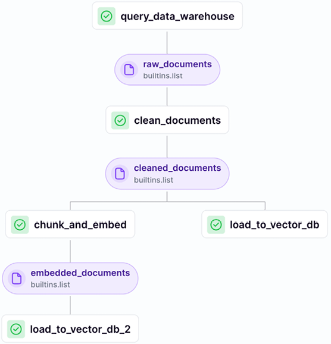
最後一塊拼圖是理解如何動態設定 RAG 特徵管線。所有可用設定都會以函式參數的形式暴露出來。這裡我們只需要一份作者姓名清單，如函式簽章所示：feature_engineering(author_full_names: list[str])。我們會在執行階段注入一個 YAML 設定檔，其中依據不同使用情境包含所有必要值。例如，以下設定包含本書所有作者的清單，因為我們想把我們所有人的資料都填充到特徵儲存中（可在 GitHub 儲存庫的 configs/feature_engineering.yaml 取得）：
English original
parameters:
author_full_names:
- Alex Vesa
- Maxime Labonne
- Paul Iusztin這種做法的美妙之處在於，你不必修改程式碼就能用不同的輸入值設定特徵管線。你只需在執行時提供不同的設定檔，如下所示：
English original
feature_engineering.with_options(config_path="…/feature_engineering.yaml")()你可以把設定檔路徑寫死在程式碼中，或從 CLI 提供 config_path，這樣就能在不同執行之間修改管線的設定。為了簡單起見，我們把設定檔路徑寫死了。因此，我們可以透過呼叫 run.py 腳本來執行特徵工程管線，如下所示：
English original
python -m tools.run --no-cache --run-feature-engineering不過，你可以輕鬆地再加入另一個 CLI 參數來傳遞 config_path 變數。此外，你也可以使用以下 poe 指令來執行特徵管線：
English original
poetry poe run-feature-engineering-pipeline讓我們繼續前進，逐一深入了解所有 ZenML 步驟。所有特徵工程管線步驟的原始碼可在 GitHub 的 "steps/feature_engineering" 取得。我們將從第一個步驟開始，也就是向資料倉儲查詢要處理成特徵的新內容。
English original
查詢資料倉儲
首先要留意的是，步驟就是一個以 @step 裝飾的 Python 函式，這與 ZenML 管線的運作方式類似。下方的函式以作者全名清單作為輸入，並執行以下核心步驟：
English original
- 它嘗試以名字與姓氏取得或建立
UserDocument實例，並將此實例附加到authors清單。如果該使用者不存在，就會拋出錯誤。 - 它從資料倉儲擷取該使用者的所有原始資料，並擴展
documents清單以包含這些使用者文件。 - 最後，它計算一個具描述性的中繼資料字典，並在 ZenML 中記錄與追蹤。
… # 其他 import
from zenml import get_step_context, step
@step
def query_data_warehouse(
author_full_names: list[str],
) -> Annotated[list, "raw_documents"]:
documents = []
authors = []
for author_full_name in author_full_names:
logger.info(f"Querying data warehouse for user: {author_full_name}")
first_name, last_name = utils.split_user_full_name(author_full_name)
logger.info(f"First name: {first_name}, Last name: {last_name}")
user = UserDocument.get_or_create(first_name=first_name, last_name=last_name)
authors.append(user)
results = fetch_all_data(user)
user_documents = [doc for query_result in results.values() for doc in query_result]
documents.extend(user_documents)
step_context = get_step_context()
step_context.add_output_metadata(output_name="raw_documents", metadata=_get_metadata(documents))
return documentsfetch 函式利用執行緒池（thread pool），把每個查詢放到不同執行緒上執行。由於我們有多個資料類別，我們必須針對文章（articles）、貼文（posts）與儲存庫（repositories）分別執行不同的查詢，因為它們存放在不同的集合（collection）中。每個查詢都會呼叫資料倉儲，其瓶頸在於網路 I/O 與資料倉儲延遲，而非機器的 CPU。因此，把每個查詢移到不同執行緒，我們就能將它們平行化。最終，這個 fetch 函式的執行時間不會是所有查詢延遲的總和，而是所有呼叫中的最大值。
English original
在 Python 中，使用執行緒來平行化 I/O 密集的呼叫是良好做法，因為它們不會被 Python 全域直譯器鎖（Global Interpreter Lock，GIL）鎖住。相反地，把每個呼叫放到不同行程（process）會帶來太多額外開銷，因為啟動一個行程比啟動一個執行緒耗時得多。
English original
在 Python 中，只有當操作屬於 CPU 或記憶體密集時，你才需要用行程來平行化，因為 GIL 會影響它們。每個行程都有不同的 GIL。因此，平行化你的運算邏輯，例如處理一批已載入記憶體的文件或影像，並不受 Python GIL 限制的影響。
English original
def fetch_all_data(user: UserDocument) -> dict[str, list[NoSQLBaseDocument]]:
user_id = str(user.id)
with ThreadPoolExecutor() as executor:
future_to_query = {
executor.submit(__fetch_articles, user_id): "articles",
executor.submit(__fetch_posts, user_id): "posts",
executor.submit(__fetch_repositories, user_id): "repositories",
}
results = {}
for future in as_completed(future_to_query):
query_name = future_to_query[future]
try:
results[query_name] = future.result()
except Exception:
logger.exception(f"'{query_name}' request failed.")
results[query_name] = []
return results_get_metadata() 函式接收已查詢的文件與作者清單，並依每個資料類別計算它們的數量：
English original
def _get_metadata(documents: list[Document]) -> dict:
metadata = {
"num_documents": len(documents),
}
for document in documents:
collection = document.get_collection_name()
if collection not in metadata:
metadata[collection] = {}
if "authors" not in metadata[collection]:
metadata[collection]["authors"] = list()
metadata[collection]["num_documents"] = metadata[collection].get("num_documents", 0) + 1
metadata[collection]["authors"].append(document.author_full_name)
for value in metadata.values():
if isinstance(value, dict) and "authors" in value:
value["authors"] = list(set(value["authors"]))
return metadata我們會在 ZenML 儀表板中公開這些中繼資料，以便快速查看已載入資料的一些統計資訊。例如，在圖 4.13 中，我們存取了 query_data_warehouse() 步驟的中繼資料分頁，你可以在那裡看到，
English original
在該次特徵管線的執行中，我們從三位作者載入了 76 份文件。這對於監控與除錯批次管線來說極其強大。你隨時可以依照自身的使用情境，加入任何對你有意義的內容。
English original
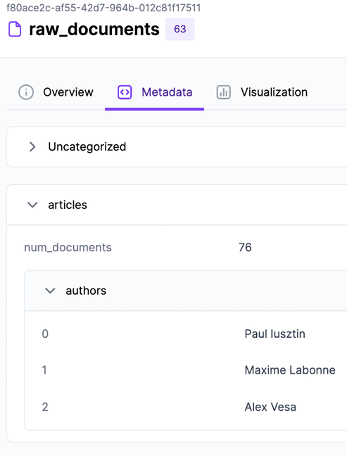
清理文件
在清理步驟中，我們會逐一走訪所有文件，並把所有邏輯委派給 CleaningDispatcher，它知道要依據資料類別套用哪一種清理邏輯。請記得，我們想要對文章、貼文與程式碼儲存庫套用不同的清理技術，或至少在未來具備這樣的能力。
English original
@step
def clean_documents(
documents: Annotated[list, "raw_documents"],
) -> Annotated[list, "cleaned_documents"]:
cleaned_documents = []
for document in documents:
cleaned_document = CleaningDispatcher.dispatch(document)
cleaned_documents.append(cleaned_document)
step_context = get_step_context()
step_context.add_output_metadata(output_name="cleaned_documents", metadata=_get_metadata(cleaned_documents))
return cleaned_documents所計算出的中繼資料，與我們在 query_data_warehouse() 步驟中記錄的內容相似。因此，接著讓我們進入分塊與嵌入的部分。
English original
分塊並嵌入清理後的文件
與我們清理文件的方式類似，我們把分塊與嵌入的邏輯委派給一個 dispatcher，它知道如何處理每一種資料類別。請注意，分塊 dispatcher 回傳的是清單，而不是單一物件，這是合理的，因為文件會被拆成多個分塊。我們將在本章「The dispatcher layer」一節深入探討這個 dispatcher。
English original
@step
def chunk_and_embed(
cleaned_documents: Annotated[list, "cleaned_documents"],
) -> Annotated[list, "embedded_documents"]:
metadata = {"chunking": {}, "embedding": {}, "num_documents": len(cleaned_documents)}
embedded_chunks = []
for document in cleaned_documents:
chunks = ChunkingDispatcher.dispatch(document)
metadata["chunking"] = _add_chunks_metadata(chunks, metadata)
for batched_chunks in utils.misc.batch(chunks, 10):
batched_embedded_chunks = EmbeddingDispatcher.dispatch(batched_chunks)
embedded_chunks.extend(batched_embedded_chunks)
metadata["embedding"] = _add_embeddings_metadata(embedded_chunks, metadata)
metadata["num_chunks"] = len(embedded_chunks)
metadata["num_embedded_chunks"] = len(embedded_chunks)
step_context = get_step_context()
step_context.add_output_metadata(output_name="embedded_documents", metadata=metadata)
return embedded_chunks在圖 4.14 中，你可以看到分塊與嵌入 ZenML 步驟的中繼資料。例如，你可以很快理解我們把 76 份文件轉換成 2,373 個分塊，或是我們用來對文章分塊的屬性，例如 chunk_size 為 500、chunk_overlap 為 50。
English original
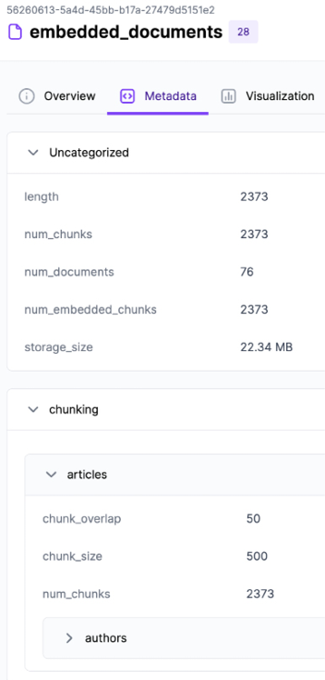
在圖 4.15 中，嵌入與分塊步驟其餘的 ZenML 中繼資料，詳列了用來計算向量的嵌入模型及其屬性。
English original
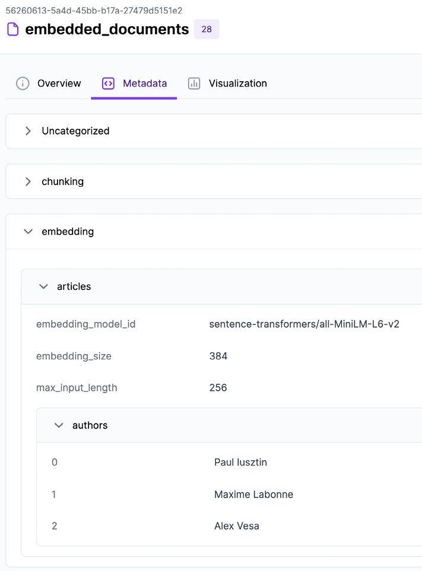
由於 ML 系統在生產環境中隨時可能因為漂移（drift）或未處理的使用情境而故障，善用中繼資料區段來監控所攝入的資料，會是一項強大的工具，能替你省下數天的除錯時間，換算成業務上的數萬美元甚至更多。
English original
將文件載入向量資料庫
由於每篇文章、貼文或程式碼儲存庫都存放在向量資料庫中不同的 collection，我們必須依資料類別把所有文件分組。接著，我們把每一組批次載入 Qdrant 向量資料庫：
English original
@step
def load_to_vector_db(
documents: Annotated[list, "documents"],
) -> None:
logger.info(f"Loading {len(documents)} documents into the vector DB.")
grouped_documents = VectorBaseDocument.group_by_class(documents)
for document_class, documents in grouped_documents.items():
logger.info(f"Loading documents into {document_class.get_collection_name()}")
for documents_batch in utils.misc.batch(documents, size=10):
try:
document_class.bulk_insert(documents_batch)
except Exception:
return False
return TruePydantic 領域實體
在深入探討 dispatcher 之前，我們必須先了解我們所操作的領域物件。在某種程度上，實作 LLM Twin 時我們遵循領域驅動設計（domain-driven design, DDD）原則，這些原則指出領域實體是你應用程式的核心。因此，在繼續之前，先理解我們所使用的領域類別階層很重要。
English original
我們使用 Pydantic 來建模所有的領域實體。在撰寫本書時，選擇 Pydantic 是毫不猶豫的決定，因為它是撰寫具備開箱即用型別驗證之資料結構的首選 Python 套件。由於 Python 是動態型別語言，在執行階段使用 Pydantic 進行型別驗證，能讓你的系統穩健性提升數個數量級，因為你可以確定自己永遠在處理正確型別的資料。
English original
我們 LLM Twin 應用程式的領域分為兩個維度：
English original
- 資料類別：貼文（post）、文章（article）與儲存庫（repository）
- 資料狀態：已清理（cleaned）、已分塊（chunked）與已嵌入（embedded）
我們決定為文件的每一種狀態建立一個基底類別，因而得到以下基底抽象類別：
English original
class CleanedDocument(VectorBaseDocument, ABC)
class Chunk(VectorBaseDocument, ABC)
class EmbeddedChunk(VectorBaseDocument, ABC)請注意，它們全都繼承 VectorBaseDocument 類別，這是我們自訂的 OVM 實作，我們會在本章下一節加以說明。此外，它也繼承了 ABC，這會讓類別變成抽象類別。因此，你無法從這些類別實例化物件；你只能繼承它們。這就是為什麼基底類別總是被標記為抽象。
English original
上述每一個基底抽象類別（用來建模狀態）都會有一個子類別，加入資料類別這個維度。例如，CleanedDocument 類別會有以下子類別：
English original
class CleanedPostDocument(CleanedDocument)
class CleanedArticleDocument(CleanedDocument)
class CleanedRepositoryDocument(CleanedDocument)如圖 4.16 所示，我們會對 Chunk 與 EmbeddedChunk 這兩個基底抽象類別重複同樣的邏輯。我們會為每一種資料類別與狀態的組合實作一個特定的文件類別，最終產生九種領域實體型別。舉例來說，在攝入原始文件時，清理步驟會產出一個 CleanedArticleDocument 實例，分塊步驟會回傳一組 ArticleChunk 物件，而嵌入操作則會回傳 EmbeddedArticleChunk 實例，這些實例封裝了嵌入向量以及載入向量資料庫所需的所有中繼資料。
English original
貼文與儲存庫也會以相同方式處理。
English original
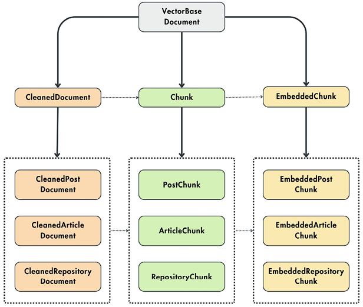
我們選擇這樣的設計，是因為狀態清單很少變動，而我們希望能擴充資料類別清單。因此，依狀態來組織類別，讓我們可以透過繼承這些基底抽象類別來插入另一種資料類別。
English original
讓我們來看看已清理文件階層的完整程式碼。已清理文件的所有屬性都會被保存在向量資料庫的中繼資料中。例如，已清理文章文件的中繼資料永遠會包含內容、平台、作者 ID、作者全名，以及文章的連結。
English original
另一個關鍵層面是 Config 內部類別，它定義了向量資料庫中 collection 的名稱、實體的資料類別，以及在建立 collection 時是否要運用向量索引：
English original
class CleanedDocument(VectorBaseDocument, ABC):
content: str
platform: str
author_id: UUID4
author_full_name: str
class CleanedPostDocument(CleanedDocument):
image: Optional[str] = None
class Config:
name = "cleaned_posts"
category = DataCategory.POSTS
use_vector_index = False
class CleanedArticleDocument(CleanedDocument):
link: str
class Config:
name = "cleaned_articles"
category = DataCategory.ARTICLES
use_vector_index = False
class CleanedRepositoryDocument(CleanedDocument):
name: str
link: str
class Config:
name = "cleaned_repositories"
category = DataCategory.REPOSITORIES
use_vector_index = False為了結束這一節，我們也來看看 chunk 與 embedded chunk 的基底抽象類別：
English original
class Chunk(VectorBaseDocument, ABC):
content: str
platform: str
document_id: UUID4
author_id: UUID4
author_full_name: str
metadata: dict = Field(default_factory=dict)
… # PostChunk、ArticleChunk、RepositoryChunk
class EmbeddedChunk(VectorBaseDocument, ABC):
content: str
embedding: list[float] | None
platform: str
document_id: UUID4
author_id: UUID4
author_full_name: str
metadata: dict = Field(default_factory=dict)
… # EmbeddedPostChunk、EmbeddedArticleChunk、EmbeddedRepositoryChunk我們也定義了一個 enum，把所有資料類別彙整成單一的常數結構：
English original
class DataCategory(StrEnum):
POSTS = "posts"
ARTICLES = "articles"
REPOSITORIES = "repositories"要完全理解領域物件如何運作，最後一步是深入檢視 VectorBaseDocument 這個 OVM 類別。
English original
OVM
OVM 這個詞彙的靈感來自我們在第 3 章討論過的物件關聯映射（object-relational mapping, ORM）模式。我們之所以稱它為 OVM，是因為我們操作的是嵌入與向量資料庫，而不是結構化資料與 SQL 資料表。除此之外，它遵循與 ORM 模式相同的原則。
English original
與我們在第 3 章的做法類似，我們會實作自己的 OVM 版本。即使我們的自訂範例很簡單，它仍是一個強大的範例，展示如何運用 OOP 最佳實務與原則來撰寫模組化且可擴充的類別。
English original
我們的 OVM 基底類別稱為 VectorBaseDocument。它會在 Qdrant 之上支援 CRUD 操作。基於我們應用程式的需求，我們僅限於建立與讀取操作，但它可以輕易擴充為更新與刪除功能。
English original
讓我們來看看 VectorBaseDocument 類別的定義：
English original
from pydantic import UUID4, BaseModel
from typing import Generic
from llm_engineering.infrastructure.db.qdrant import connection
T = TypeVar("T", bound="VectorBaseDocument")
class VectorBaseDocument(BaseModel, Generic[T], ABC):
id: UUID4 = Field(default_factory=uuid.uuid4)
@classmethod
def from_record(cls: Type[T], point: Record) -> T:
_id = UUID(point.id, version=4)
payload = point.payload or {}
attributes = {
"id": _id,
**payload,
}
if cls._has_class_attribute("embedding"):
payload["embedding"] = point.vector or None
return cls(**attributes)
def to_point(self: T, **kwargs) -> PointStruct:
exclude_unset = kwargs.pop("exclude_unset", False)
by_alias = kwargs.pop("by_alias", True)
payload = self.dict(exclude_unset=exclude_unset, by_alias=by_alias)
_id = str(payload.pop("id"))
vector = payload.pop("embedding", {})
if vector and isinstance(vector, np.ndarray):
vector = vector.tolist()
return PointStruct(id=_id, vector=vector, payload=payload)from_record() 方法會把 Qdrant 格式的資料點轉換成我們以 Pydantic 為基礎的內部結構。另一方面，to_point() 方法會取得目前實例的屬性，並將其轉換成 Qdrant 的 PointStruct() 格式。我們會利用這兩個方法來實作建立與讀取操作。
English original
最終，所有對 Qdrant 的操作都會透過 connection 實例完成，而該實例會在應用程式的基礎設施層中被實例化。
English original
bulk_insert() 方法會把每份文件映射成一個 point。接著，它會使用 Qdrant 的 connection 實例，把所有 point 載入到 Qdrant 中指定的集合。如果插入失敗一次，它會嘗試建立該集合，然後再次執行插入。通常，把邏輯拆成兩個函式是良好的做法。其中一個私有函式包含實際邏輯（在我們的案例中是 _bulk_insert()），而另一個公開函式則負責處理所有錯誤與失敗情境。
English original
class VectorBaseDocument(BaseModel, Generic[T], ABC):
… # 類別其餘部分
@classmethod
def bulk_insert(cls: Type[T], documents: list["VectorBaseDocument"]) -> bool:
try:
cls._bulk_insert(documents)
except exceptions.UnexpectedResponse:
logger.info(
f"Collection '{cls.get_collection_name()}' does not exist. Trying to create the collection and reinsert the documents."
)
cls.create_collection()
try:
cls._bulk_insert(documents)
except exceptions.UnexpectedResponse:
logger.error(f"Failed to insert documents in '{cls.get_collection_name()}'.")
return False
return True
@classmethod
def _bulk_insert(cls: Type[T], documents: list["VectorBaseDocument"]) -> None:
points = [doc.to_point() for doc in documents]
connection.upsert(collection_name=cls.get_collection_name(), points=points)集合名稱會從繼承 OVM 的子類別中所定義的 Config 類別推斷而來：
English original
class VectorBaseDocument(BaseModel, Generic[T], ABC):
… # 類別其餘部分
@classmethod
def get_collection_name(cls: Type[T]) -> str:
if not hasattr(cls, "Config") or not hasattr(cls.Config, "name"):
raise ImproperlyConfigured(
"The class should define a Config class with" "the 'name' property that reflects the collection's name."
)
return cls.Config.name現在，我們必須定義一個方法，讓我們能讀取 vector DB 中的所有記錄（而不使用向量相似度搜尋邏輯）。bulk_find() 方法讓我們能捲動（或列出）某個集合中的所有記錄。下方的函式會捲動 Qdrant vector DB，它會回傳一份資料點清單，這些資料點最終會透過 from_record() 方法映射到我們的內部結構。
English original
limit 參數控制我們一次回傳多少項目，而 offset 則表示 Qdrant 從哪個 point 的 ID 開始回傳記錄。
English original
class VectorBaseDocument(BaseModel, Generic[T], ABC):
… # 類別其餘部分
@classmethod
def bulk_find(cls: Type[T], limit: int = 10, **kwargs) -> tuple[list[T], UUID | None]:
try:
documents, next_offset = cls._bulk_find(limit=limit, **kwargs)
except exceptions.UnexpectedResponse:
logger.error(f"Failed to search documents in '{cls.get_collection_name()}'.")
documents, next_offset = [], None
return documents, next_offset
@classmethod
def _bulk_find(cls: Type[T], limit: int = 10, **kwargs) -> tuple[list[T], UUID | None]:
collection_name = cls.get_collection_name()
offset = kwargs.pop("offset", None)
offset = str(offset) if offset else None
records, next_offset = connection.scroll(
collection_name=collection_name,
limit=limit,
with_payload=kwargs.pop("with_payload", True),
with_vectors=kwargs.pop("with_vectors", False),
offset=offset,
**kwargs,
)
documents = [cls.from_record(record) for record in records]
if next_offset is not None:
next_offset = UUID(next_offset, version=4)
return documents, next_offset拼圖的最後一塊，是定義一個能對給定查詢嵌入（query embedding）執行向量相似度搜尋的方法。如同先前，我們定義了公開的 search() 與私有的 _search() 方法。當呼叫 connection.search() 函式時，搜尋是由 Qdrant 執行。
English original
class VectorBaseDocument(BaseModel, Generic[T], ABC):
… # 類別其餘部分
@classmethod
def search(cls: Type[T], query_vector: list, limit: int = 10, **kwargs) -> list[T]:
try:
documents = cls._search(query_vector=query_vector, limit=limit, **kwargs)
except exceptions.UnexpectedResponse:
logger.error(f"Failed to search documents in '{cls.get_collection_name()}'.")
documents = []
return documents
@classmethod
def _search(cls: Type[T], query_vector: list, limit: int = 10, **kwargs) -> list[T]:
collection_name = cls.get_collection_name()
records = connection.search(
collection_name=collection_name,
query_vector=query_vector,
limit=limit,
with_payload=kwargs.pop("with_payload", True),
with_vectors=kwargs.pop("with_vectors", False),
**kwargs,
)
documents = [cls.from_record(record) for record in records]
return documents現在我們已了解網域實體（domain entities）長什麼樣子，以及 OVM 如何運作，接著讓我們繼續看負責清理、分塊與嵌入文件的分派器。
English original
分派器層
分派器會接收一份文件，並依據其資料類別（article、post 或 repository）套用專屬的處理器。處理器可以清理、分塊或嵌入文件。
English original
讓我們先把焦點放在 CleaningDispatcher。它主要實作一個 dispatch() 方法，該方法接收原始文件。依據文件的資料類別，它會實例化並呼叫一個處理器，套用該資料點專屬的清理邏輯：
English original
class CleaningDispatcher:
cleaning_factory = CleaningHandlerFactory()
@classmethod
def dispatch(cls, data_model: NoSQLBaseDocument) -> VectorBaseDocument:
data_category = DataCategory(data_model.get_collection_name())
handler = cls.cleaning_factory.create_handler(data_category)
clean_model = handler.clean(data_model)
logger.info(
"Data cleaned successfully.",
data_category=data_category,
cleaned_content_len=len(clean_model.content),
)
return clean_model分派器邏輯的關鍵在於 CleaningHandlerFactory()，它會依據文件的資料類別實例化不同的清理處理器：
English original
class CleaningHandlerFactory:
@staticmethod
def create_handler(data_category: DataCategory) -> CleaningDataHandler:
if data_category == DataCategory.POSTS:
return PostCleaningHandler()
elif data_category == DataCategory.ARTICLES:
return ArticleCleaningHandler()
elif data_category == DataCategory.REPOSITORIES:
return RepositoryCleaningHandler()
else:
raise ValueError("Unsupported data type")Dispatcher 或 Factory 類別本身並不花俏，但它們提供直覺且簡單的介面，讓你能對文件套用各種操作。在操作文件時，你不必擔心它們的資料類別，也不必用 if-else 陳述式污染你的商業邏輯；你有一個專門處理此事的類別。你有一個能清理任何文件的單一類別，這遵循軟體工程中的 DRY（don’t repeat yourself，不要重複自己）原則。遵循 DRY 意味著你只有單一失敗點，而且程式碼可以輕鬆擴充。例如，如果我們新增一種額外型別，只需擴充 Factory 類別，而不必修改程式碼中多處出現的地方。
English original
ChunkingDispatcher 與 EmbeddingDispatcher 遵循相同的模式。它們分別使用 ChunkingHandlerFactory 與 EmbeddingHandlerFactory，依據輸入文件的資料類別初始化正確的處理器。之後，它們會呼叫該處理器並回傳結果。
English original
Factory 類別運用了抽象工廠（abstract factory）建立型模式（https://refactoring.guru/design-patterns/abstract-factory），此模式會實例化一組實作相同介面的類別家族。在我們的案例中，這些處理器不論類型為何，都實作了 clean() 方法。
English original
此外，Handler 類別家族運用了策略（strategy）行為型模式（https://refactoring.guru/design-patterns/strategy）；當你想在物件中使用演算法的不同變體，並能在執行階段從一種演算法切換到另一種時，就會使用此模式來實例化。
English original
直覺地說，在我們的分派器層中，工廠與策略模式的組合運作方式如下：
English original
- 起初，我們知道要清理資料，但由於我們只在執行階段才知道資料類別，因此無法決定要套用哪種策略。
- 我們可以圍繞清理程式碼撰寫整體程式，並把邏輯抽象到
Handler()介面之下，該介面將代表我們的策略。 - 當我們取得一個資料點時，會套用抽象工廠模式，為其資料型別建立正確的清理處理器。
- 最終，分派器層會使用該處理器並執行正確的策略。
藉由這麼做，我們可以：
English original
- 隔離特定資料類別的邏輯。
- 運用多型（polymorphism）避免程式碼充滿數百個 if-else 陳述式。
- 讓程式碼模組化且可擴充。當新的資料類別出現時，我們只需實作新的處理器並修改 Factory 類別，而不必更動程式碼的其他任何部分。
RAG 特徵管線的最後一個元件，就是清理、分塊與嵌入處理器的實作。
English original
處理器
處理器與我們的網域是一對一的結構，也就是說每個實體都有專屬的處理器，如圖 4.17 所示。總共會有九個 Handler 類別，遵循下列基礎介面：
English original
class CleaningDataHandler()
class ChunkingDataHandler()
class EmbeddingDataHandler()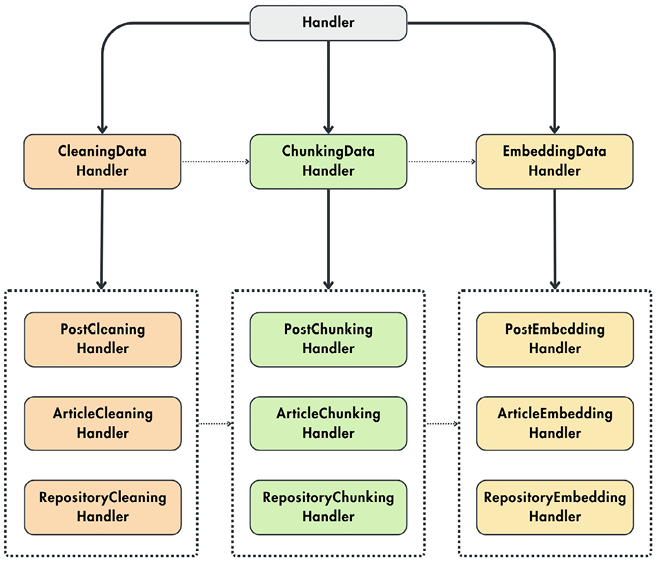
讓我們逐一檢視每個處理器家族，看看它們如何實作。
English original
清理處理器
CleaningDataHandler() 策略介面看起來如下：
English original
… # 其他 import。
from typing import Generic, TypeVar
DocumentT = TypeVar("DocumentT", bound=Document)
CleanedDocumentT = TypeVar("CleanedDocumentT", bound=CleanedDocument)
class CleaningDataHandler(ABC, Generic[DocumentT, CleanedDocumentT]):
@abstractmethod
def clean(self, data_model: DocumentT) -> CleanedDocumentT:
pass現在，針對每種 post、article 與 repository，我們都必須實作不同的處理器，如下所示：
English original
class PostCleaningHandler(CleaningDataHandler):
def clean(self, data_model: PostDocument) -> CleanedPostDocument:
return CleanedPostDocument(
id=data_model.id,
content=clean_text(" #### ".join(data_model.content.values())),
… # 從 data_model 複製其餘參數
)
class ArticleCleaningHandler(CleaningDataHandler):
def clean(self, data_model: ArticleDocument) -> CleanedArticleDocument:
valid_content = [content for content in data_model.content.values() if content]
return CleanedArticleDocument(
id=data_model.id,
content=clean_text(" #### ".join(valid_content)),
platform=data_model.platform,
link=data_model.link,
author_id=data_model.author_id,
author_full_name=data_model.author_full_name,
)
class RepositoryCleaningHandler(CleaningDataHandler):
def clean(self, data_model: RepositoryDocument) -> CleanedRepositoryDocument:
return CleanedRepositoryDocument(
id=data_model.id,
content=clean_text(" #### ".join(data_model.content.values())),
… # 從 data_model 複製其餘參數
)這些處理器會接收原始文件網域實體，清理內容，並回傳清理後的文件。所有處理器都使用 clean_text() 函式來清理文字。為了簡化，我們對所有資料類別採用了相同的清理技術。不過在真實世界的設定中，我們還必須進一步最佳化，並為每個資料類別建立不同的清理函式。策略模式讓這件事變得輕而易舉，因為我們只要替換處理器中的清理函式，就這樣。
English original
clean_text() 函式中套用的清理步驟，與第 5 章「建立指令資料集」（Creating an instruction dataset）一節所討論的步驟相同。我們不想重複自己。因此，若想複習，請參閱該章。此時此刻，我們主要關心的是把整體邏輯自動化並整合進 RAG 特徵管線。因此，在把 ML 系統投入運作後，用於微調的所有清理後資料都會從邏輯特徵儲存（logical feature store）取得，使其成為存取資料的唯一真實來源。
English original
分塊處理器
首先，讓我們檢視 ChunkingDataHandler() 策略處理器。我們把 metadata 字典公開為屬性，以便把所有分塊所需的屬性彙整在單一結構中。透過這樣的結構化方式，我們可以輕鬆地把所有資訊記錄到 ZenML，以追蹤並除錯我們的分塊邏輯。此處理器接收清理後的文件作為輸入，並回傳 chunk 實體。所有處理器都可以在 GitHub 上找到：https://github.com/PacktPublishing/LLM-Engineering/tree/main/llm_engineering/application/preprocessing。
English original
… # 其他 import。
from typing import Generic, TypeVar
CleanedDocumentT = TypeVar("CleanedDocumentT", bound=CleanedDocument)
ChunkT = TypeVar("ChunkT", bound=Chunk)
class ChunkingDataHandler(ABC, Generic[CleanedDocumentT, ChunkT]):
@property
def metadata(self) -> dict:
return {
"chunk_size": 500,
"chunk_overlap": 50,
}
@abstractmethod
def chunk(self, data_model: CleanedDocumentT) -> list[ChunkT]:
pass讓我們了解 ArticleChunkingHandler() 類別是如何實作的。第一步是覆寫 metadata 屬性，並客製化分塊邏輯所需的屬性型別。例如，在處理文章時，我們關心 chunk 的最小與最大長度。此處理器的 chunk() 方法接收清理後的文章文件，並回傳文章 chunk 實體的清單。它使用 chunk_text() 函式把清理後的內容切分成 chunk。分塊函式會依文件的 min_length 與 max_length 中繼資料欄位進行客製化。
English original
chunk_id 是以區塊內容的 MD5 雜湊值計算而來。因此，若兩個區塊的內容完全相同，它們就會得到相同的 ID，我們便能輕易地將它們去重。最後，我們建立一份區塊實體（chunk entities）的清單並回傳。
English original
class ArticleChunkingHandler(ChunkingDataHandler):
@property
def metadata(self) -> dict:
return {
"min_length": 1000,
"max_length": 1000,
}
def chunk(self, data_model: CleanedArticleDocument) -> list[ArticleChunk]:
data_models_list = []
cleaned_content = data_model.content
chunks = chunk_article(
cleaned_content, min_length=self.metadata["min_length"], max_length=self.metadata["max_length"]
)
for chunk in chunks:
chunk_id = hashlib.md5(chunk.encode()).hexdigest()
model = ArticleChunk(
id=UUID(chunk_id, version=4),
content=chunk,
platform=data_model.platform,
link=data_model.link,
document_id=data_model.id,
author_id=data_model.author_id,
author_full_name=data_model.author_full_name,
metadata=self.metadata,
)
data_models_list.append(model)
return data_models_list最後一步是深入探討 chunk_article() 函式，它主要做兩件事：
English original
- 它使用正規表達式，透過尋找後面接空格的句號、問號或驚嘆號，來找出給定文字中的所有句子。不過，它會避免在標點符號屬於縮寫或首字母縮寫（例如「e.g.」或「Dr.」）的情況下進行切分。
- 它會將句子群組成單一區塊，直到達到 max_length 上限。當達到最大長度，且區塊大小大於允許的最小值時，該區塊就會被加入函式最後回傳的清單中。
def chunk_article(text: str, min_length: int, max_length: int):
sentences = re.split(r"(?<!\w\.\w.)(?<![A-Z][a-z]\.)(?<=\.|\?)\s", text)
extracts = []
current_chunk = ""
for sentence in sentences:
sentence = sentence.strip()
if not sentence:
continue
if len(current_chunk) + len(sentence) <= max_length:
current_chunk += sentence + " "
else:
if len(current_chunk) >= min_length:
extracts.append(current_chunk.strip())
current_chunk = sentence + " "
if len(current_chunk) >= min_length:
extracts.append(current_chunk.strip())
return extractsPostChunkingHandler 與 RepositoryChunkingHandler（可在 GitHub 的 llm_engineering/application/preprocessing/chunking_data_handlers.py 取得）的結構與 ArticleChunkingHandler 類似。不過，它們使用的是更通用的區塊化函式 chunk_text()，值得深入探究。
English original
chunk_text() 函式是一個兩步驟的流程，其邏輯如下：
English original
- 它使用 LangChain 的 RecursiveCharacterTextSplitter()，依指定的分隔符或區塊大小來切分文字。使用分隔符時，我們會先嘗試在給定文字中尋找段落；但若沒有段落，或段落過長，就會依指定的區塊大小進行切分。
- 請注意，我們想確保區塊不會超過 embedding 模型的最大輸入長度。因此，我們會把上述建立的所有區塊再送入 SenteceTransformersTokenTextSplitter()，它會考量模型的最大輸入長度。在此階段，我們也會套用 chunk_overlap 邏輯，因為我們希望只在確認區塊夠小之後才進行重疊處理。
… # 其他匯入。
from langchain.text_splitter import RecursiveCharacterTextSplitter
from llm_engineering.application.networks import EmbeddingModelSingleton
def chunk_text(text: str, chunk_size: int = 500, chunk_overlap: int = 50):
character_splitter = RecursiveCharacterTextSplitter(
separators=["\n\n"], chunk_size=chunk_size, chunk_overlap=0
)
text_split_by_characters = character_splitter.split_text(text)
token_splitter = SentenceTransformersTokenTextSplitter(
chunk_overlap=chunk_overlap,
tokens_per_chunk=embedding_model.max_input_length,
model_name=embedding_model.model_id,
)
chunks_by_tokens = []
for section in text_split_by_characters:
chunks_by_tokens.extend(token_splitter.split_text(section))
return chunks_by_tokens總結來說，上述函式會回傳一份區塊清單，這些區塊同時符合所提供的區塊參數與 embedding 模型的最大輸入長度。
English original
嵌入處理器
嵌入處理器（embedding handlers）與其他處理器略有不同，因為 EmbeddingDataHandler() 介面包含了大部分的邏輯。我們採取這種做法，是因為在呼叫 embedding 模型時，我們希望盡可能批次處理大量樣本，以優化推論流程。在 GPU 上執行模型時，批次樣本會被獨立且平行地處理。因此，透過批次化區塊，我們可以依批次大小與所使用的硬體，將推論流程優化 10 倍以上。我們實作了 embed() 方法，讓你想對單一資料點執行推論時使用；另外也實作了 embed_batch() 方法。embed_batch() 方法以已切分的文件作為輸入，收集其內容成為清單，送入 embedding 模型，並將結果映射為 embedded chunk 網域實體（domain entity）。此映射是透過 map_model() 抽象方法完成，必須針對每種資料類別進行客製化。
English original
… # 其他匯入。
from typing import Generic, TypeVar, cast
from llm_engineering.application.networks import EmbeddingModelSingleton
ChunkT = TypeVar("ChunkT", bound=Chunk)
EmbeddedChunkT = TypeVar("EmbeddedChunkT", bound=EmbeddedChunk)
embedding_model = EmbeddingModelSingleton()
class EmbeddingDataHandler(ABC, Generic[ChunkT, EmbeddedChunkT]):
"""
Abstract class for all embedding data handlers.
All data transformations logic for the embedding step is done here.
"""
def embed(self, data_model: ChunkT) -> EmbeddedChunkT:
return self.embed_batch([data_model])[0]
def embed_batch(self, data_model: list[ChunkT]) -> list[EmbeddedChunkT]:
embedding_model_input = [data_model.content for data_model in data_model]
embeddings = embedding_model(embedding_model_input, to_list=True)
embedded_chunk = [
self.map_model(data_model, cast(list[float], embedding))
for data_model, embedding in zip(data_model, embeddings)
]
return embedded_chunk
@abstractmethod
def map_model(self, data_model: ChunkT, embedding: list[float]) -> EmbeddedChunkT:
pass我們只看 ArticleEmbeddingHandler() 的實作，因為其他處理器高度相似。如你所見，我們只需實作 map_model() 方法，它接收一個輸入區塊並以批次模式計算嵌入。其範疇是將這些資訊映射為 EmbeddedArticleChunk 這個 Pydantic 實體。
English original
class ArticleEmbeddingHandler(EmbeddingDataHandler):
def map_model(self, data_model: ArticleChunk, embedding: list[float]) -> EmbeddedArticleChunk:
return EmbeddedArticleChunk(
id=data_model.id,
content=data_model.content,
embedding=embedding,
platform=data_model.platform,
link=data_model.link,
document_id=data_model.document_id,
author_id=data_model.author_id,
author_full_name=data_model.author_full_name,
metadata={
"embedding_model_id": embedding_model.model_id,
"embedding_size": embedding_model.embedding_size,
"max_input_length": embedding_model.max_input_length,
},
)最後一步是了解 EmbeddingModelSingleton() 的運作方式。它是對 Sentence Transformers 中 SentenceTransformer() 類別的包裝，負責初始化 embedding 模型。針對外部套件撰寫包裝層通常是良好的實務做法。如此一來，當你想更換第三方工具時，只需修改包裝層的內部邏輯，而不必改動整個程式碼庫。
English original
SentenceTransformer() 類別會以 Settings 類別中定義的 model_id 進行初始化，讓我們只要變更設定檔而非程式碼，就能快速測試多個 embedding 模型。這也是我完全不強調該用哪個 embedding 模型的原因。這會依據你的使用情境、資料、硬體與延遲需求而不斷改變。但透過撰寫一個可快速配置的通用類別，你就能實驗多個 embedding 模型，直到找到最適合你的那一個。
English original
from sentence_transformers.SentenceTransformer import SentenceTransformer
from llm_engineering.settings import settings
from .base import SingletonMeta
class EmbeddingModelSingleton(metaclass=SingletonMeta):
def __init__(
self,
model_id: str = settings.TEXT_EMBEDDING_MODEL_ID,
device: str = settings.RAG_MODEL_DEVICE,
cache_dir: Optional[Path] = None,
) -> None:
self._model_id = model_id
self._device = device
self._model = SentenceTransformer(
self._model_id,
device=self._device,
cache_folder=str(cache_dir) if cache_dir else None,
)
self._model.eval()
@property
def model_id(self) -> str:
return self._model_id
@cached_property
def embedding_size(self) -> int:
dummy_embedding = self._model.encode("")
return dummy_embedding.shape[0]
@property
def max_input_length(self) -> int:
return self._model.max_seq_length
@property
def tokenizer(self) -> AutoTokenizer:
return self._model.tokenizer
def __call__(
self, input_text: str | list[str], to_list: bool = True
) -> NDArray[np.float32] | list[float] | list[list[float]]:
try:
embeddings = self._model.encode(input_text)
except Exception:
logger.error(f"Error generating embeddings for {self._model_id}.")
return [] if to_list else np.array([])
if to_list:
embeddings = embeddings.tolist()
return embeddings此 embedding 模型類別實作了 singleton pattern（https://refactoring.guru/design-patterns/singleton），這是一種創建型設計模式（creational design pattern），確保一個類別只有一個實例，同時提供對該實例的全域存取點。EmbeddingModelSingleton() 類別繼承自 SingletonMeta 類別，確保每當 EmbeddingModelSingleton() 被實例化時，都會回傳同一個實例。這對 ML 模型來說很有效，因為你透過 singleton pattern 只將模型載入記憶體一次，之後就能在程式碼庫的任何地方使用它。否則，你每次使用時都得將模型載入記憶體，或可能多次載入而導致記憶體問題。此外，這也讓存取 embedding_size 這類屬性變得非常方便——你必須對 embedding 模型做一次 dummy forward pass 才能得知其輸出大小。作為 singleton，這個 forward pass 只會執行一次，之後在程式執行期間都能隨時存取。
English original
總結
本章從對 RAG 的淺介開始，說明為什麼、以及何時該使用它。我們也了解了 embeddings 與 vector DB 的運作方式，這是任何 RAG 系統的基石。接著，我們探討了進階 RAG，以及為何我們首先需要它。我們對 RAG 中哪些部分可以被優化建立了扎實的理解，並提出了一些處理文字資料的熱門進階 RAG 技術。接下來，我們將所學的一切應用於設計 LLM Twin 的 RAG 特徵管線架構。我們也了解了批次管線與串流管線的差異，並簡短介紹了有助於同步兩個資料庫的 CDC 模式。最終，我們一步步深入 LLM Twin 的 RAG 特徵管線的實作，看到如何整合 ZenML 作為編排器、如何設計應用程式的網域實體，以及如何實作 OVM 模組。同時，我們也了解了如何套用一些軟體工程最佳實務，例如抽象工廠（abstract factory）與策略（strategy）軟體模式，來實作一個模組化且可擴充的層，依每份文件的資料類別套用不同的清理、切分與嵌入技術。
English original
本章僅聚焦於實作擷取（ingestion）管線，而這只是標準 RAG 應用程式的其中一個元件。在第 9 章，我們將透過實作檢索（retrieval）與生成（generation）元件，並將其整合進推論管線，來完成整個 RAG 系統。不過在那之前，下一章我們將探討如何利用所蒐集的資料生成自訂資料集，並以此微調 LLM。
English original
參考文獻
- Kenton, J.D.M.W.C. and Toutanova, L.K., 2019, June. Bert: Pre-training of deep bidirectional transformers for language understanding. In Proceedings of naacL-HLT (Vol. 1, p. 2).
- Liu, Y., 2019. Roberta: A robustly optimized bert pretraining approach. arXiv preprint arXiv:1907.11692.
- Mikolov, T., 2013. Efficient estimation of word representations in vector space. arXiv preprint arXiv:1301.3781.
- Jeffrey Pennington, Richard Socher, and Christopher Manning. 2014. GloVe: Global Vectors for Word Representation. In Proceedings of the 2014 Conference on Empirical Methods in Natural Language Processing (EMNLP), pages 1532–1543, Doha, Qatar. Association for Computational Linguistics.
- He, K., Zhang, X., Ren, S. and Sun, J., 2016. Deep residual learning for image recognition. In Proceedings of the IEEE conference on computer vision and pattern recognition (pp. 770-778).
- Radford, A., Kim, J.W., Hallacy, C., Ramesh, A., Goh, G., Agarwal, S., Sastry, G., Askell, A., Mishkin, P., Clark, J. and Krueger, G., 2021, July. Learning transferable visual models from natural language supervision. In International conference on machine learning (pp. 8748-8763). PMLR.
- What is Change Data Capture (CDC)? | Confluent. (n.d.). Confluent. https://www.confluent.io/en-gb/learn/change-data-capture/
- Refactoring.Guru. (2024, January 1). Singleton. https://refactoring.guru/design-patterns/singleton
- Refactoring.Guru. (2024b, January 1). Strategy. https://refactoring.guru/design-patterns/strategy
- Refactoring.Guru. (2024a, January 1). Abstract Factory. https://refactoring.guru/design-patterns/abstract-factory
- Schwaber-Cohen, R. (n.d.). What is a Vector Database & How Does it Work? Use Cases + Examples. Pinecone. https://www.pinecone.io/learn/vector-database/
- Monigatti, L. (2024, February 19). Advanced Retrieval-Augmented Generation: From Theory to LlaMaIndex Implementation. Medium. https://towardsdatascience.com/advanced-retrieval-augmented-generation-from-theory-to-llamaindex-implementation-4de1464a9930
- Monigatti, L. (2023, December 6). A guide on 12 tuning Strategies for Production-Ready RAG applications. Medium. https://towardsdatascience.com/a-guide-on-12-tuning-strategies-for-production-ready-rag-applications-7ca646833439
- Monigatti, L. (2024b, February 19). Advanced Retrieval-Augmented Generation: From Theory to LlaMaIndex Implementation. Medium. https://towardsdatascience.com/advanced-retrieval-augmented-generation-from-theory-to-llamaindex-implementation-4de1464a9930
- Maameri, S. (2024, May 10). Routing in RAG-Driven applications - towards data science. Medium. https://towardsdatascience.com/routing-in-rag-driven-applications-a685460a7220
加入本書的 Discord 社群
加入我們社群的 Discord 空間，與作者及其他讀者一起討論：
English original
https://packt.link/llmeng